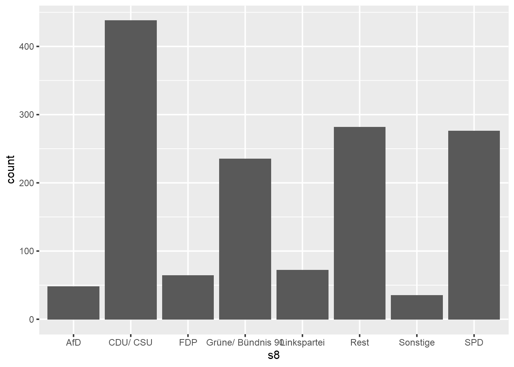
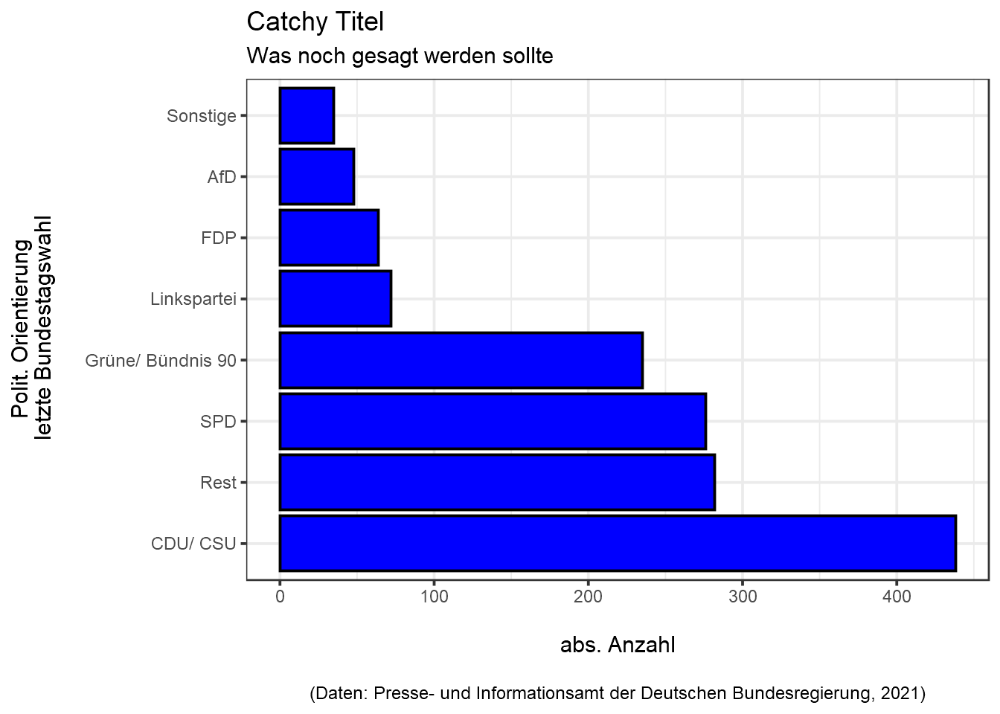
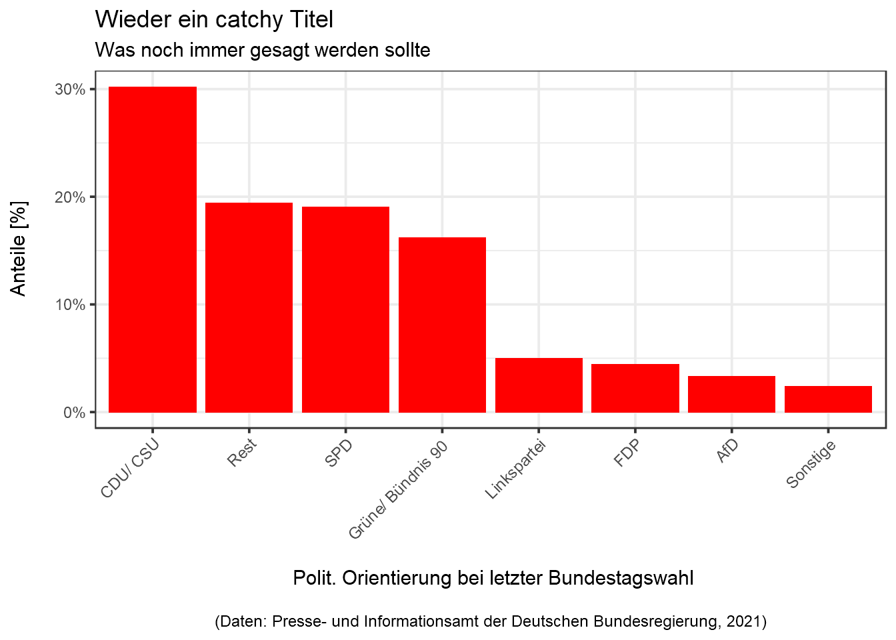
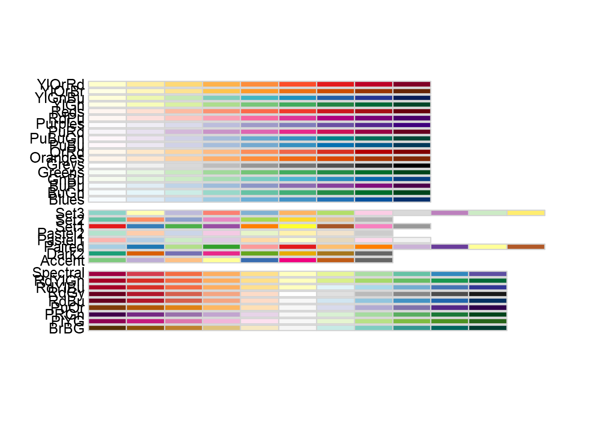
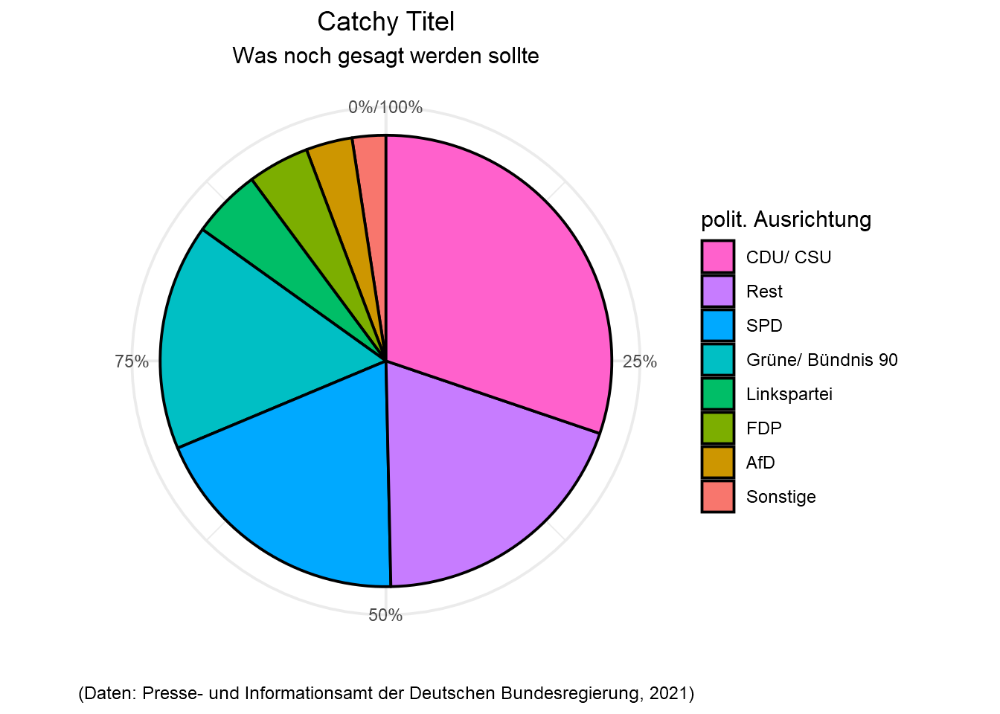
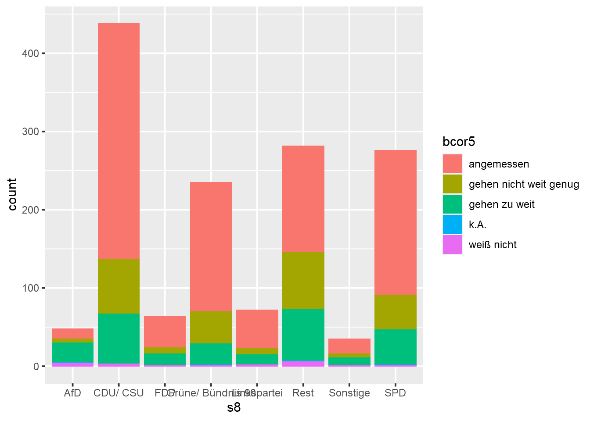
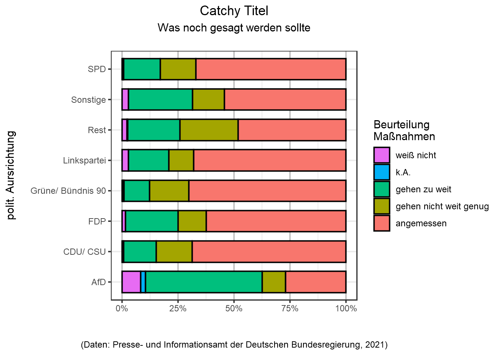
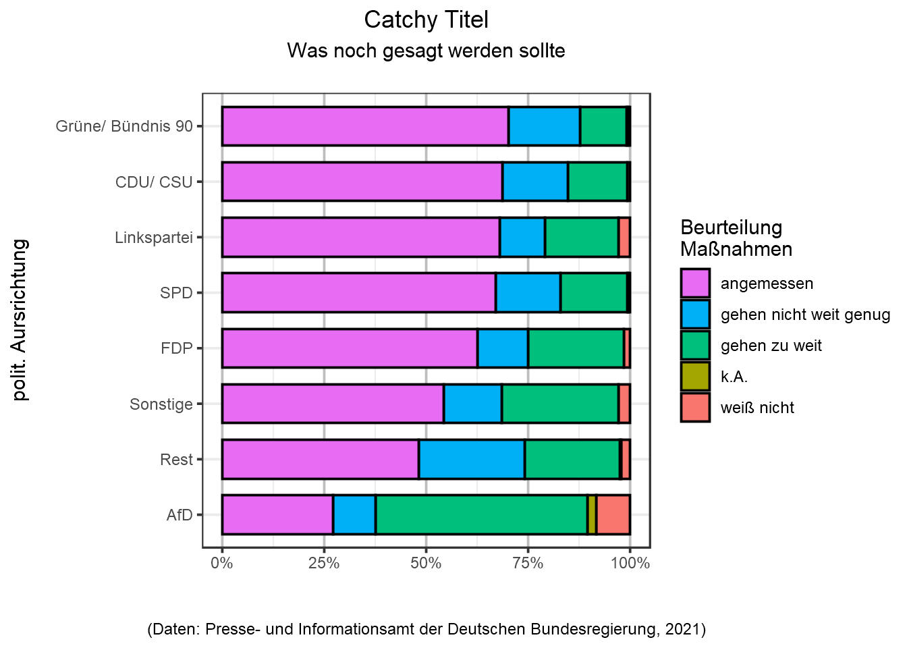

<!DOCTYPE html>
<html lang="" xml:lang="">
<head>

  <meta charset="utf-8" />
  <meta http-equiv="X-UA-Compatible" content="IE=edge" />
  <title>7 Die Häufigkeitsanalyse kategorialer Daten | How 2 do Things with Numbers (SS 2022)</title>
  <meta name="description" content="7 Die Häufigkeitsanalyse kategorialer Daten | How 2 do Things with Numbers (SS 2022)" />
  <meta name="generator" content="bookdown 0.24 and GitBook 2.6.7" />

  <meta property="og:title" content="7 Die Häufigkeitsanalyse kategorialer Daten | How 2 do Things with Numbers (SS 2022)" />
  <meta property="og:type" content="book" />
  
  
  
  

  <meta name="twitter:card" content="summary" />
  <meta name="twitter:title" content="7 Die Häufigkeitsanalyse kategorialer Daten | How 2 do Things with Numbers (SS 2022)" />
  
  
  

<meta name="author" content="Kami Höferl | https://orcid.org/0000-0002-5397-180X" />


  <meta name="viewport" content="width=device-width, initial-scale=1" />
  <meta name="apple-mobile-web-app-capable" content="yes" />
  <meta name="apple-mobile-web-app-status-bar-style" content="black" />
  
  
<link rel="prev" href="06_basics_datananalyse.html"/>
<link rel="next" href="08_zusammenhaenge_kategoriale_variablen.html"/>
<script src="libs/header-attrs-2.12/header-attrs.js"></script>
<script src="libs/jquery-3.6.0/jquery-3.6.0.min.js"></script>
<script src="https://cdn.jsdelivr.net/npm/fuse.js@6.4.6/dist/fuse.min.js"></script>
<link href="libs/gitbook-2.6.7/css/style.css" rel="stylesheet" />
<link href="libs/gitbook-2.6.7/css/plugin-table.css" rel="stylesheet" />
<link href="libs/gitbook-2.6.7/css/plugin-bookdown.css" rel="stylesheet" />
<link href="libs/gitbook-2.6.7/css/plugin-highlight.css" rel="stylesheet" />
<link href="libs/gitbook-2.6.7/css/plugin-search.css" rel="stylesheet" />
<link href="libs/gitbook-2.6.7/css/plugin-fontsettings.css" rel="stylesheet" />
<link href="libs/gitbook-2.6.7/css/plugin-clipboard.css" rel="stylesheet" />


<link href="libs/anchor-sections-1.1.0/anchor-sections.css" rel="stylesheet" />
<link href="libs/anchor-sections-1.1.0/anchor-sections-hash.css" rel="stylesheet" />
<script src="libs/anchor-sections-1.1.0/anchor-sections.js"></script>
<html>

  <head>
  <script>
    window.addEventListener("load", () => {
        const enabled = document.querySelectorAll(".fullscreen-enabled");
        for (let i = 0; i < enabled.length; i++) {
            enabled[i].style.cursor = "pointer";
            enabled[i].onclick = () => {
                enabled[i].requestFullscreen();
            };
        }
    });
  </script>
  </head>

  <body>
  <!-- body content here -->
  </body>

</html>


<style type="text/css">
pre > code.sourceCode { white-space: pre; position: relative; }
pre > code.sourceCode > span { display: inline-block; line-height: 1.25; }
pre > code.sourceCode > span:empty { height: 1.2em; }
.sourceCode { overflow: visible; }
code.sourceCode > span { color: inherit; text-decoration: inherit; }
pre.sourceCode { margin: 0; }
@media screen {
div.sourceCode { overflow: auto; }
}
@media print {
pre > code.sourceCode { white-space: pre-wrap; }
pre > code.sourceCode > span { text-indent: -5em; padding-left: 5em; }
}
pre.numberSource code
  { counter-reset: source-line 0; }
pre.numberSource code > span
  { position: relative; left: -4em; counter-increment: source-line; }
pre.numberSource code > span > a:first-child::before
  { content: counter(source-line);
    position: relative; left: -1em; text-align: right; vertical-align: baseline;
    border: none; display: inline-block;
    -webkit-touch-callout: none; -webkit-user-select: none;
    -khtml-user-select: none; -moz-user-select: none;
    -ms-user-select: none; user-select: none;
    padding: 0 4px; width: 4em;
    color: #aaaaaa;
  }
pre.numberSource { margin-left: 3em; border-left: 1px solid #aaaaaa;  padding-left: 4px; }
div.sourceCode
  {   }
@media screen {
pre > code.sourceCode > span > a:first-child::before { text-decoration: underline; }
}
code span.al { color: #ff0000; font-weight: bold; } /* Alert */
code span.an { color: #60a0b0; font-weight: bold; font-style: italic; } /* Annotation */
code span.at { color: #7d9029; } /* Attribute */
code span.bn { color: #40a070; } /* BaseN */
code span.bu { } /* BuiltIn */
code span.cf { color: #007020; font-weight: bold; } /* ControlFlow */
code span.ch { color: #4070a0; } /* Char */
code span.cn { color: #880000; } /* Constant */
code span.co { color: #60a0b0; font-style: italic; } /* Comment */
code span.cv { color: #60a0b0; font-weight: bold; font-style: italic; } /* CommentVar */
code span.do { color: #ba2121; font-style: italic; } /* Documentation */
code span.dt { color: #902000; } /* DataType */
code span.dv { color: #40a070; } /* DecVal */
code span.er { color: #ff0000; font-weight: bold; } /* Error */
code span.ex { } /* Extension */
code span.fl { color: #40a070; } /* Float */
code span.fu { color: #06287e; } /* Function */
code span.im { } /* Import */
code span.in { color: #60a0b0; font-weight: bold; font-style: italic; } /* Information */
code span.kw { color: #007020; font-weight: bold; } /* Keyword */
code span.op { color: #666666; } /* Operator */
code span.ot { color: #007020; } /* Other */
code span.pp { color: #bc7a00; } /* Preprocessor */
code span.sc { color: #4070a0; } /* SpecialChar */
code span.ss { color: #bb6688; } /* SpecialString */
code span.st { color: #4070a0; } /* String */
code span.va { color: #19177c; } /* Variable */
code span.vs { color: #4070a0; } /* VerbatimString */
code span.wa { color: #60a0b0; font-weight: bold; font-style: italic; } /* Warning */
</style>

<style type="text/css">
/* Used with Pandoc 2.11+ new --citeproc when CSL is used */
div.csl-bib-body { }
div.csl-entry {
  clear: both;
}
.hanging div.csl-entry {
  margin-left:2em;
  text-indent:-2em;
}
div.csl-left-margin {
  min-width:2em;
  float:left;
}
div.csl-right-inline {
  margin-left:2em;
  padding-left:1em;
}
div.csl-indent {
  margin-left: 2em;
}
</style>

<link rel="stylesheet" href="style.css" type="text/css" />
</head>

<body>


  <div class="book without-animation with-summary font-size-2 font-family-1" data-basepath=".">

    <div class="book-summary">
      <nav role="navigation">

<ul class="summary">
<li><a href="index.html#howdy">Howdy<span></span></a></li>
<li class="chapter" data-level="1" data-path="01_syllabus.html"><a href="01_syllabus.html"><i class="fa fa-check"></i><b>1</b> Ouvertüre (aka “Syllabus”)<span></span></a>
<ul>
<li class="chapter" data-level="1.1" data-path="01_syllabus.html"><a href="01_syllabus.html#lernziele"><i class="fa fa-check"></i><b>1.1</b> Lernziele<span></span></a></li>
<li class="chapter" data-level="1.2" data-path="01_syllabus.html"><a href="01_syllabus.html#zeitplanung"><i class="fa fa-check"></i><b>1.2</b> Zeitplanung<span></span></a></li>
<li class="chapter" data-level="1.3" data-path="01_syllabus.html"><a href="01_syllabus.html#rulez-of-the-game"><i class="fa fa-check"></i><b>1.3</b> Rulez of the Game<span></span></a></li>
<li class="chapter" data-level="1.4" data-path="01_syllabus.html"><a href="01_syllabus.html#übungsteile"><i class="fa fa-check"></i><b>1.4</b> Übungsteile<span></span></a></li>
<li class="chapter" data-level="1.5" data-path="01_syllabus.html"><a href="01_syllabus.html#bewertungskriterien"><i class="fa fa-check"></i><b>1.5</b> Bewertungskriterien<span></span></a></li>
<li class="chapter" data-level="1.6" data-path="01_syllabus.html"><a href="01_syllabus.html#formelles-zu-den-übungsarbeiten"><i class="fa fa-check"></i><b>1.6</b> Formelles zu den Übungsarbeiten<span></span></a></li>
<li class="chapter" data-level="1.7" data-path="01_syllabus.html"><a href="01_syllabus.html#empfehlung-zur-eingesetzten-software"><i class="fa fa-check"></i><b>1.7</b> Empfehlung zur eingesetzten Software<span></span></a></li>
<li class="chapter" data-level="1.8" data-path="01_syllabus.html"><a href="01_syllabus.html#ausgewählte-hilfestellungen-zum-thema-r-und-rstudio"><i class="fa fa-check"></i><b>1.8</b> Ausgewählte Hilfestellungen zum Thema R und RStudio<span></span></a></li>
<li class="chapter" data-level="1.9" data-path="01_syllabus.html"><a href="01_syllabus.html#literatur"><i class="fa fa-check"></i><b>1.9</b> Literatur zur Lehrveranstaltung<span></span></a></li>
</ul></li>
<li class="chapter" data-level="2" data-path="02_forschungsprozess.html"><a href="02_forschungsprozess.html"><i class="fa fa-check"></i><b>2</b> Wege zum empirischen Forschen<span></span></a>
<ul>
<li><a href="02_forschungsprozess.html#zielsetzung-dieser-einheit">📢 Zielsetzung dieser Einheit<span></span></a></li>
<li class="chapter" data-level="2.1" data-path="02_forschungsprozess.html"><a href="02_forschungsprozess.html#wozu-empirie"><i class="fa fa-check"></i><b>2.1</b> Wozu Empirie?<span></span></a></li>
<li class="chapter" data-level="2.2" data-path="02_forschungsprozess.html"><a href="02_forschungsprozess.html#aber-wie"><i class="fa fa-check"></i><b>2.2</b> Aber wie?<span></span></a></li>
<li class="chapter" data-level="2.3" data-path="02_forschungsprozess.html"><a href="02_forschungsprozess.html#hauptsache-daten"><i class="fa fa-check"></i><b>2.3</b> Hauptsache Daten?<span></span></a></li>
</ul></li>
<li class="chapter" data-level="3" data-path="03_messen.html"><a href="03_messen.html"><i class="fa fa-check"></i><b>3</b> Warmup: Messen und Skalen<span></span></a>
<ul>
<li><a href="03_messen.html#zielsetzung-dieser-einheit-1">📢 Zielsetzung dieser Einheit<span></span></a></li>
<li class="chapter" data-level="3.1" data-path="03_messen.html"><a href="03_messen.html#was-passiert-beim-messen"><i class="fa fa-check"></i><b>3.1</b> Was passiert beim Messen?<span></span></a></li>
<li class="chapter" data-level="3.2" data-path="03_messen.html"><a href="03_messen.html#skalenniveaus-reloaded"><i class="fa fa-check"></i><b>3.2</b> Skalenniveaus (reloaded)<span></span></a></li>
</ul></li>
<li class="chapter" data-level="4" data-path="04_messen_primaer_sekundaerdaten.html"><a href="04_messen_primaer_sekundaerdaten.html"><i class="fa fa-check"></i><b>4</b> Sekundärdaten gewinnen<span></span></a>
<ul>
<li><a href="04_messen_primaer_sekundaerdaten.html#zielsetzung-dieser-einheit-2">📢 Zielsetzung dieser Einheit<span></span></a></li>
<li class="chapter" data-level="4.1" data-path="04_messen_primaer_sekundaerdaten.html"><a href="04_messen_primaer_sekundaerdaten.html#sekundär-daten-gewinnen"><i class="fa fa-check"></i><b>4.1</b> (Sekundär-)Daten gewinnen<span></span></a>
<ul>
<li class="chapter" data-level="4.1.1" data-path="04_messen_primaer_sekundaerdaten.html"><a href="04_messen_primaer_sekundaerdaten.html#ein-technischer-aspekt-der-gewinnung-von-sekundärdaten"><i class="fa fa-check"></i><b>4.1.1</b> Ein technischer Aspekt der Gewinnung von Sekundärdaten<span></span></a></li>
</ul></li>
<li class="chapter" data-level="4.2" data-path="04_messen_primaer_sekundaerdaten.html"><a href="04_messen_primaer_sekundaerdaten.html#zur-qualität-von-sekundärdaten"><i class="fa fa-check"></i><b>4.2</b> Zur Qualität von Sekundärdaten<span></span></a></li>
<li class="chapter" data-level="4.3" data-path="04_messen_primaer_sekundaerdaten.html"><a href="04_messen_primaer_sekundaerdaten.html#sekundärdaten-als-open-data-nutzen-können"><i class="fa fa-check"></i><b>4.3</b> Sekundärdaten als “Open Data” nutzen (können)<span></span></a></li>
</ul></li>
<li class="chapter" data-level="5" data-path="05_primaererhebung.html"><a href="05_primaererhebung.html"><i class="fa fa-check"></i><b>5</b> Primärdaten gewinnen<span></span></a>
<ul>
<li><a href="05_primaererhebung.html#zielsetzung-dieser-einheit-3">📢 Zielsetzung dieser Einheit<span></span></a></li>
<li class="chapter" data-level="5.1" data-path="05_primaererhebung.html"><a href="05_primaererhebung.html#nicht-rekative-verfahren"><i class="fa fa-check"></i><b>5.1</b> Nicht-rekative Verfahren<span></span></a></li>
<li class="chapter" data-level="5.2" data-path="05_primaererhebung.html"><a href="05_primaererhebung.html#beobachtungen"><i class="fa fa-check"></i><b>5.2</b> Beobachtungen<span></span></a></li>
<li class="chapter" data-level="5.3" data-path="05_primaererhebung.html"><a href="05_primaererhebung.html#befragungen"><i class="fa fa-check"></i><b>5.3</b> Befragungen<span></span></a></li>
<li class="chapter" data-level="5.4" data-path="05_primaererhebung.html"><a href="05_primaererhebung.html#special-die-stichprobenziehung"><i class="fa fa-check"></i><b>5.4</b> Special: Die Stichprobenziehung<span></span></a></li>
</ul></li>
<li class="chapter" data-level="6" data-path="06_basics_datananalyse.html"><a href="06_basics_datananalyse.html"><i class="fa fa-check"></i><b>6</b> Die Basics zur Datenanalyse<span></span></a>
<ul>
<li><a href="06_basics_datananalyse.html#zielsetzung-dieser-einheit-4">📢 Zielsetzung dieser Einheit<span></span></a></li>
<li class="chapter" data-level="6.1" data-path="06_basics_datananalyse.html"><a href="06_basics_datananalyse.html#daten-analysieren---aber-wie"><i class="fa fa-check"></i><b>6.1</b> Daten analysieren - aber wie?<span></span></a></li>
<li class="chapter" data-level="6.2" data-path="06_basics_datananalyse.html"><a href="06_basics_datananalyse.html#die-hilfsmittel-r-rstudio"><i class="fa fa-check"></i><b>6.2</b> Die Hilfsmittel R &amp; RStudio<span></span></a></li>
<li class="chapter" data-level="6.3" data-path="06_basics_datananalyse.html"><a href="06_basics_datananalyse.html#grundlegende-datenstrukturen-in-r"><i class="fa fa-check"></i><b>6.3</b> Grundlegende Datenstrukturen in R<span></span></a></li>
<li class="chapter" data-level="6.4" data-path="06_basics_datananalyse.html"><a href="06_basics_datananalyse.html#daten-im--und-exportieren"><i class="fa fa-check"></i><b>6.4</b> Daten im- und exportieren<span></span></a>
<ul>
<li class="chapter" data-level="6.4.1" data-path="06_basics_datananalyse.html"><a href="06_basics_datananalyse.html#der-datenimport"><i class="fa fa-check"></i><b>6.4.1</b> Der Datenimport<span></span></a></li>
<li class="chapter" data-level="6.4.2" data-path="06_basics_datananalyse.html"><a href="06_basics_datananalyse.html#der-datenexport"><i class="fa fa-check"></i><b>6.4.2</b> Der Datenexport<span></span></a></li>
</ul></li>
</ul></li>
<li class="chapter" data-level="7" data-path="07_n_kategoriale_variablen.html"><a href="07_n_kategoriale_variablen.html"><i class="fa fa-check"></i><b>7</b> Die Häufigkeitsanalyse kategorialer Daten<span></span></a>
<ul>
<li><a href="07_n_kategoriale_variablen.html#zielsetzung-dieser-einheit-5">📢 Zielsetzung dieser Einheit<span></span></a></li>
<li class="chapter" data-level="7.1" data-path="07_n_kategoriale_variablen.html"><a href="07_n_kategoriale_variablen.html#katdatasetup"><i class="fa fa-check"></i><b>7.1</b> Kategoriale Daten auswerten<span></span></a></li>
<li class="chapter" data-level="7.2" data-path="07_n_kategoriale_variablen.html"><a href="07_n_kategoriale_variablen.html#vorbereitendes"><i class="fa fa-check"></i><b>7.2</b> Vorbereitendes<span></span></a></li>
<li class="chapter" data-level="7.3" data-path="07_n_kategoriale_variablen.html"><a href="07_n_kategoriale_variablen.html#katdatamanipul"><i class="fa fa-check"></i><b>7.3</b> Der Datenimport, die Datenaufbereitung und -validierung<span></span></a></li>
<li class="chapter" data-level="7.4" data-path="07_n_kategoriale_variablen.html"><a href="07_n_kategoriale_variablen.html#die-häufikgeitsanalyse-einer-variablen"><i class="fa fa-check"></i><b>7.4</b> Die Häufikgeitsanalyse einer Variablen<span></span></a></li>
<li class="chapter" data-level="7.5" data-path="07_n_kategoriale_variablen.html"><a href="07_n_kategoriale_variablen.html#katdatabivarn"><i class="fa fa-check"></i><b>7.5</b> Die Häufigkeitsanalyse zweier kategorialer Variablen<span></span></a></li>
</ul></li>
<li class="chapter" data-level="8" data-path="08_zusammenhaenge_kategoriale_variablen.html"><a href="08_zusammenhaenge_kategoriale_variablen.html"><i class="fa fa-check"></i><b>8</b> Zusammenhänge zwischen kategorialen Variablen<span></span></a>
<ul>
<li><a href="08_zusammenhaenge_kategoriale_variablen.html#zielsetzung-dieser-einheit-6">📢 Zielsetzung dieser Einheit<span></span></a></li>
<li class="chapter" data-level="8.1" data-path="08_zusammenhaenge_kategoriale_variablen.html"><a href="08_zusammenhaenge_kategoriale_variablen.html#die-ausgangslage"><i class="fa fa-check"></i><b>8.1</b> Die Ausgangslage<span></span></a></li>
<li class="chapter" data-level="8.2" data-path="08_zusammenhaenge_kategoriale_variablen.html"><a href="08_zusammenhaenge_kategoriale_variablen.html#zusammenhänge-zwischen-zwei-kategorialen-variablen-messen---die-theorie"><i class="fa fa-check"></i><b>8.2</b> Zusammenhänge zwischen zwei kategorialen Variablen messen - die Theorie<span></span></a></li>
<li class="chapter" data-level="8.3" data-path="08_zusammenhaenge_kategoriale_variablen.html"><a href="08_zusammenhaenge_kategoriale_variablen.html#überprüfung-des-zusammenhangs-zwischen-politischer-orientierung-und-angemessenheit-des-pandemiemanagements"><i class="fa fa-check"></i><b>8.3</b> Überprüfung des Zusammenhangs zwischen politischer Orientierung und Angemessenheit des Pandemiemanagements<span></span></a></li>
<li class="chapter" data-level="8.4" data-path="08_zusammenhaenge_kategoriale_variablen.html"><a href="08_zusammenhaenge_kategoriale_variablen.html#charakterisierung-des-zusammenhang-mittels-der-pearson-residuen"><i class="fa fa-check"></i><b>8.4</b> Charakterisierung des Zusammenhang mittels der Pearson Residuen<span></span></a></li>
<li class="chapter" data-level="8.5" data-path="08_zusammenhaenge_kategoriale_variablen.html"><a href="08_zusammenhaenge_kategoriale_variablen.html#beurteilung-der-stärke-des-zusammenhangs-mit-cramers-v"><i class="fa fa-check"></i><b>8.5</b> Beurteilung der Stärke des Zusammenhangs mit Cramers V<span></span></a></li>
</ul></li>
<li class="chapter" data-level="9" data-path="09_deskriptive_statistik_metrisch.html"><a href="09_deskriptive_statistik_metrisch.html"><i class="fa fa-check"></i><b>9</b> Deskriptive Statistik für metrische Daten<span></span></a>
<ul>
<li><a href="09_deskriptive_statistik_metrisch.html#zielsetzung-dieser-einheit-7">📢 Zielsetzung dieser Einheit<span></span></a></li>
<li class="chapter" data-level="9.1" data-path="09_deskriptive_statistik_metrisch.html"><a href="09_deskriptive_statistik_metrisch.html#ausgangDeskriptivMetrisch"><i class="fa fa-check"></i><b>9.1</b> Die Ausgangslage<span></span></a></li>
<li class="chapter" data-level="9.2" data-path="09_deskriptive_statistik_metrisch.html"><a href="09_deskriptive_statistik_metrisch.html#der-datenimport-die-datenaufbereitung-und--validierung"><i class="fa fa-check"></i><b>9.2</b> Der Datenimport, die Datenaufbereitung und -validierung<span></span></a></li>
<li class="chapter" data-level="9.3" data-path="09_deskriptive_statistik_metrisch.html"><a href="09_deskriptive_statistik_metrisch.html#ein-blick-auf-klassische-lage--und-streuungsparameter"><i class="fa fa-check"></i><b>9.3</b> Ein Blick auf klassische Lage- und Streuungsparameter<span></span></a></li>
<li class="chapter" data-level="9.4" data-path="09_deskriptive_statistik_metrisch.html"><a href="09_deskriptive_statistik_metrisch.html#exkurs-für-motivierte-geographinnen-räumlich-explizite-deskription"><i class="fa fa-check"></i><b>9.4</b> Exkurs für motivierte GeographInnen: Räumlich explizite Deskription<span></span></a></li>
<li class="chapter" data-level="9.5" data-path="09_deskriptive_statistik_metrisch.html"><a href="09_deskriptive_statistik_metrisch.html#lage--und-streuungsparameter-graphisch-darstellen"><i class="fa fa-check"></i><b>9.5</b> Lage- und Streuungsparameter graphisch darstellen<span></span></a>
<ul>
<li class="chapter" data-level="9.5.1" data-path="09_deskriptive_statistik_metrisch.html"><a href="09_deskriptive_statistik_metrisch.html#histogramme"><i class="fa fa-check"></i><b>9.5.1</b> <strong>Histogramme</strong><span></span></a></li>
<li class="chapter" data-level="9.5.2" data-path="09_deskriptive_statistik_metrisch.html"><a href="09_deskriptive_statistik_metrisch.html#boxplots"><i class="fa fa-check"></i><b>9.5.2</b> <strong>Boxplots</strong><span></span></a></li>
</ul></li>
<li class="chapter" data-level="9.6" data-path="09_deskriptive_statistik_metrisch.html"><a href="09_deskriptive_statistik_metrisch.html#ein-erster-blick-auf-mögliche-zusammenhänge"><i class="fa fa-check"></i><b>9.6</b> Ein erster Blick auf mögliche Zusammenhänge<span></span></a></li>
</ul></li>
<li class="chapter" data-level="10" data-path="10_metrische_zusammenhaenge.html"><a href="10_metrische_zusammenhaenge.html"><i class="fa fa-check"></i><b>10</b> Zusammenhänge zwischen zwei metrischen Variablen<span></span></a>
<ul>
<li><a href="10_metrische_zusammenhaenge.html#zielsetzung-dieser-einheit-8">📢 Zielsetzung dieser Einheit<span></span></a></li>
<li class="chapter" data-level="10.1" data-path="10_metrische_zusammenhaenge.html"><a href="10_metrische_zusammenhaenge.html#die-ausgangslage-1"><i class="fa fa-check"></i><b>10.1</b> Die Ausgangslage<span></span></a></li>
<li class="chapter" data-level="10.2" data-path="10_metrische_zusammenhaenge.html"><a href="10_metrische_zusammenhaenge.html#datenimport-und--aufbereitung"><i class="fa fa-check"></i><b>10.2</b> Datenimport und -aufbereitung<span></span></a></li>
<li class="chapter" data-level="10.3" data-path="10_metrische_zusammenhaenge.html"><a href="10_metrische_zusammenhaenge.html#den-zusammenhang-graphisch-erkunden"><i class="fa fa-check"></i><b>10.3</b> Den Zusammenhang graphisch erkunden<span></span></a></li>
<li class="chapter" data-level="10.4" data-path="10_metrische_zusammenhaenge.html"><a href="10_metrische_zusammenhaenge.html#den-zusammenhang-numerisch-abbilden"><i class="fa fa-check"></i><b>10.4</b> Den Zusammenhang numerisch abbilden<span></span></a>
<ul>
<li class="chapter" data-level="10.4.1" data-path="10_metrische_zusammenhaenge.html"><a href="10_metrische_zusammenhaenge.html#überprüfung-der-normalverteilung"><i class="fa fa-check"></i><b>10.4.1</b> Überprüfung der Normalverteilung<span></span></a></li>
<li class="chapter" data-level="10.4.2" data-path="10_metrische_zusammenhaenge.html"><a href="10_metrische_zusammenhaenge.html#messung-des-zusammenhangs-zwischen-covid-erkrankungen-und-todesfällen-mittels-rangkorrelation"><i class="fa fa-check"></i><b>10.4.2</b> Messung des Zusammenhangs zwischen COVID Erkrankungen und Todesfällen mittels Rangkorrelation<span></span></a></li>
<li class="chapter" data-level="10.4.3" data-path="10_metrische_zusammenhaenge.html"><a href="10_metrische_zusammenhaenge.html#messung-des-zusammenhangs-zwischen-covid-erkrankungen-und-todesfällen-mittels-des-korrelationskoeffizienten-nach-pearson"><i class="fa fa-check"></i><b>10.4.3</b> Messung des Zusammenhangs zwischen COVID Erkrankungen und Todesfällen mittels des Korrelationskoeffizienten nach Pearson<span></span></a></li>
<li class="chapter" data-level="10.4.4" data-path="10_metrische_zusammenhaenge.html"><a href="10_metrische_zusammenhaenge.html#ermittlung-der-bundeslandspezifischen-rangkorrelationskoeffizienten"><i class="fa fa-check"></i><b>10.4.4</b> Ermittlung der bundeslandspezifischen Rangkorrelationskoeffizienten<span></span></a></li>
</ul></li>
<li class="chapter" data-level="10.5" data-path="10_metrische_zusammenhaenge.html"><a href="10_metrische_zusammenhaenge.html#lineare-regression-als-alternativer-zugang"><i class="fa fa-check"></i><b>10.5</b> Lineare Regression als alternativer Zugang<span></span></a></li>
<li class="chapter" data-level="10.6" data-path="10_metrische_zusammenhaenge.html"><a href="10_metrische_zusammenhaenge.html#konklusio"><i class="fa fa-check"></i><b>10.6</b> Konklusio<span></span></a></li>
</ul></li>
<li class="chapter" data-level="11" data-path="11_gruppenunterschiede_v2.html"><a href="11_gruppenunterschiede_v2.html"><i class="fa fa-check"></i><b>11</b> Gruppenunterschiede erforschen<span></span></a>
<ul>
<li><a href="11_gruppenunterschiede_v2.html#zielsetzung-dieser-einheit-9">📢 Zielsetzung dieser Einheit<span></span></a></li>
<li class="chapter" data-level="11.1" data-path="11_gruppenunterschiede_v2.html"><a href="11_gruppenunterschiede_v2.html#die-ausgangslage-2"><i class="fa fa-check"></i><b>11.1</b> Die Ausgangslage<span></span></a></li>
<li class="chapter" data-level="11.2" data-path="11_gruppenunterschiede_v2.html"><a href="11_gruppenunterschiede_v2.html#datenimport-und--aufbereitung-1"><i class="fa fa-check"></i><b>11.2</b> Datenimport und -aufbereitung<span></span></a></li>
<li class="chapter" data-level="11.3" data-path="11_gruppenunterschiede_v2.html"><a href="11_gruppenunterschiede_v2.html#vorbereitende-überlegungen"><i class="fa fa-check"></i><b>11.3</b> Vorbereitende Überlegungen<span></span></a>
<ul>
<li class="chapter" data-level="11.3.1" data-path="11_gruppenunterschiede_v2.html"><a href="11_gruppenunterschiede_v2.html#ermitteln-des-passenden-verfahrens"><i class="fa fa-check"></i><b>11.3.1</b> Ermitteln des passenden Verfahrens<span></span></a></li>
</ul></li>
<li class="chapter" data-level="11.4" data-path="11_gruppenunterschiede_v2.html"><a href="11_gruppenunterschiede_v2.html#gruppenunterschiede-bei-normalverteilten-variablen-mittels-varianzanalyse-untersuchen"><i class="fa fa-check"></i><b>11.4</b> Gruppenunterschiede bei normalverteilten Variablen mittels Varianzanalyse untersuchen<span></span></a>
<ul>
<li class="chapter" data-level="11.4.1" data-path="11_gruppenunterschiede_v2.html"><a href="11_gruppenunterschiede_v2.html#welch"><i class="fa fa-check"></i><b>11.4.1</b> Gruppenunterschiede bei Variablen mit Varianzheterogenität erkunden<span></span></a></li>
</ul></li>
<li class="chapter" data-level="11.5" data-path="11_gruppenunterschiede_v2.html"><a href="11_gruppenunterschiede_v2.html#gruppenunterschiede-bei-ordinalen-oder-nicht-normalverteilten-variablen"><i class="fa fa-check"></i><b>11.5</b> Gruppenunterschiede bei ordinalen oder nicht normalverteilten Variablen<span></span></a>
<ul>
<li class="chapter" data-level="11.5.1" data-path="11_gruppenunterschiede_v2.html"><a href="11_gruppenunterschiede_v2.html#vorbereitendes-1"><i class="fa fa-check"></i><b>11.5.1</b> Vorbereitendes<span></span></a></li>
<li class="chapter" data-level="11.5.2" data-path="11_gruppenunterschiede_v2.html"><a href="11_gruppenunterschiede_v2.html#eine-erster-blick-auf-die-politischen-gruppen-und-deren-sorge-vor-einer-ansteckung"><i class="fa fa-check"></i><b>11.5.2</b> Eine erster Blick auf die politischen Gruppen und deren Sorge vor einer Ansteckung<span></span></a></li>
<li class="chapter" data-level="11.5.3" data-path="11_gruppenunterschiede_v2.html"><a href="11_gruppenunterschiede_v2.html#gruppenunterschieden-mit-dem-kruskal-wallis-test-nachgehen"><i class="fa fa-check"></i><b>11.5.3</b> Gruppenunterschieden mit dem Kruskal-Wallis-Test nachgehen<span></span></a></li>
</ul></li>
</ul></li>
<li class="chapter" data-level="12" data-path="666_lit.html"><a href="666_lit.html"><i class="fa fa-check"></i><b>12</b> Quellen<span></span></a></li>
<li class="chapter" data-level="13" data-path="80_athome1.html"><a href="80_athome1.html"><i class="fa fa-check"></i><b>13</b> @Home1: Einen Fragebogen in Limesurvey umsetzen<span></span></a>
<ul>
<li><a href="80_athome1.html#zielsetzung">📢 Zielsetzung<span></span></a></li>
<li class="chapter" data-level="13.1" data-path="80_athome1.html"><a href="80_athome1.html#ausgangslage"><i class="fa fa-check"></i><b>13.1</b> Ausgangslage<span></span></a></li>
<li class="chapter" data-level="13.2" data-path="80_athome1.html"><a href="80_athome1.html#aufgabenstellung"><i class="fa fa-check"></i><b>13.2</b> Aufgabenstellung<span></span></a></li>
<li class="chapter" data-level="13.3" data-path="80_athome1.html"><a href="80_athome1.html#formelles"><i class="fa fa-check"></i><b>13.3</b> Formelles<span></span></a></li>
</ul></li>
<li class="chapter" data-level="14" data-path="81_athome2.html"><a href="81_athome2.html"><i class="fa fa-check"></i><b>14</b> @Home2: Eine einfache Quotenstichprobe<span></span></a>
<ul>
<li><a href="81_athome2.html#zielsetzung-1">📢 Zielsetzung<span></span></a></li>
<li class="chapter" data-level="14.1" data-path="81_athome2.html"><a href="81_athome2.html#ausgangslage-1"><i class="fa fa-check"></i><b>14.1</b> Ausgangslage<span></span></a></li>
<li class="chapter" data-level="14.2" data-path="81_athome2.html"><a href="81_athome2.html#aufgabenstellung-1"><i class="fa fa-check"></i><b>14.2</b> Aufgabenstellung<span></span></a></li>
<li class="chapter" data-level="14.3" data-path="81_athome2.html"><a href="81_athome2.html#formelles-1"><i class="fa fa-check"></i><b>14.3</b> Formelles<span></span></a></li>
</ul></li>
<li class="chapter" data-level="15" data-path="82_athome3.html"><a href="82_athome3.html"><i class="fa fa-check"></i><b>15</b> @Home3: Zusammenhänge und Unterschiede<span></span></a>
<ul>
<li><a href="82_athome3.html#zielsetzung-2">📢 Zielsetzung<span></span></a></li>
<li class="chapter" data-level="15.1" data-path="82_athome3.html"><a href="82_athome3.html#beispiel-a-covid-19-impfungen-in-österreich"><i class="fa fa-check"></i><b>15.1</b> Beispiel A: COVID-19 Impfungen in Österreich<span></span></a></li>
<li class="chapter" data-level="15.2" data-path="82_athome3.html"><a href="82_athome3.html#beispiel-b-bundesdeutsche-wahrnehmungen-zur-covid-19-pandemie"><i class="fa fa-check"></i><b>15.2</b> Beispiel B: Bundesdeutsche Wahrnehmungen zur COVID-19 Pandemie<span></span></a></li>
<li class="chapter" data-level="15.3" data-path="82_athome3.html"><a href="82_athome3.html#formalia"><i class="fa fa-check"></i><b>15.3</b> Formalia<span></span></a>
<ul>
<li class="chapter" data-level="15.3.1" data-path="82_athome3.html"><a href="82_athome3.html#deadline-verpasst"><i class="fa fa-check"></i><b>15.3.1</b> Deadline verpasst?<span></span></a></li>
</ul></li>
</ul></li>
</ul>

      </nav>
    </div>

    <div class="book-body">
      <div class="body-inner">
        <div class="book-header" role="navigation">
          <h1>
            <i class="fa fa-circle-o-notch fa-spin"></i><a href="./">How 2 do Things with Numbers (SS 2022)</a>
          </h1>
        </div>

        <div class="page-wrapper" tabindex="-1" role="main">
          <div class="page-inner">

            <section class="normal" id="section-">
<div id="haeufigkeit-kategorial" class="section level1 hasAnchor" number="7">
<h1><span class="header-section-number">7</span> Die Häufigkeitsanalyse kategorialer Daten<a href="07_n_kategoriale_variablen.html#haeufigkeit-kategorial" class="anchor-section" aria-label="Anchor link to header"></a></h1>
<div id="zielsetzung-dieser-einheit-5" class="section level2 unnumbered hasAnchor">
<h2>📢 Zielsetzung dieser Einheit<a href="#zielsetzung-dieser-einheit-5" class="anchor-section" aria-label="Anchor link to header"></a></h2>
<p>In dieser Einheit wollen wir uns mit der uni- und bivariaten Häufigkeitsanalyse kategorialer Daten beschäftigen. Ausgehend von einem Beispiel zur Wahrnehmung von COVID-19 Schutzmaßnahmen werden wir dazu</p>
<ul>
<li><p>Strategien zur Datenvalidierung;</p></li>
<li><p>sowie numerische und graphische Vorgehensweise zur Häufigkeitsanalyse kategorialer Variablen erproben.</p></li>
</ul>
<p>
<strong>tl;dr: </strong><a href="https://kamihoeferl.at/lehre/vu_sozwiss_1/07_n_kategoriale_variablen.R" type="application/octet-stream">Her mit dem Code!</a>
</p>
<hr />
</div>
<div id="katdatasetup" class="section level2 hasAnchor" number="7.1">
<h2><span class="header-section-number">7.1</span> Kategoriale Daten auswerten<a href="07_n_kategoriale_variablen.html#katdatasetup" class="anchor-section" aria-label="Anchor link to header"></a></h2>
<p>Auch für <strong>nominale und ordinale Daten</strong> - oftmals zusammenfassend als <strong>kategoriale Daten</strong> bezeichnet - steht uns eine Reihe von Analysemöglichkeiten zur Verfügung. Diese wollen wir uns hier anhand des folgenden Beispieldatensatzes genauer ansehen:</p>
<p>Im Auftrag des Presse- und Informationsamts der Deutschen Bundesregierung wurden seit Kalenderwoche 12/2020 laufend repräsentative <a href="https://dbk.gesis.org/dbksearch/GDesc2.asp?list=&amp;search=&amp;search2=&amp;field=&amp;field2=&amp;jahr=&amp;operator=&amp;bool=&amp;bool2=&amp;maxRec=&amp;sort=&amp;DB=d&amp;no=0205">Bevölkerungsbefragungen zum Thema “Corona-Krise”</a> durchgeführt. Eine dieser Befragungen wollen wir uns näher ansehen:</p>
<p>👉 <a href="https://search.gesis.org/research_data/ZA7677" class="uri">https://search.gesis.org/research_data/ZA7677</a></p>
<p>Die Daten (inkl. Fragebogen etc.) dieser Befragung aus der Kalenderwoche 45/2020 wurden dem gesis-Repositorium des Leibniz-Instituts für Sozialwissenschaften entnommen und können 👉 <a href="data/Trendfragen_Corona_45-20.zip">hier als ZIP-Datei geladen</a> werden.</p>
<p>Nach dem Download extrahieren wir diese Daten in den Ordner “Trendfragen_Corona_45-20” in unserem “data”-Verzeichnis:</p>
<pre><code>    Projektfolder
    | skript_1.R
    | ...
    | skript_n.R    
    +-- data
        +-- Trendfragen_Corona_45-20
            | GESIS-Suche- Trendfragen Corona (Woche 45-2020).url
            | ...
            | ZA7677_v1-0-0.csv
        | datensatz_1.csv
        | ...
        | datensatz_n.csv</code></pre>
<p>Wie uns der <a href="data/Trendfragen_Corona_45-20/ZA7677_fb.pdf">Fragebogen (data/ZA7677_fb.pdf)</a> verrät, wurde eine Vielzahl an Merkmalen abgefragt. Aus dieser Vielzahl picken wir uns diese beiden Merkmale heraus:</p>
<ul>
<li><p><strong>Frage Nr. 5: Die beurteilte Angemessenheit der Maßnahmen zur Pandemiebekämpfung</strong><br />
Wie schätzen Sie die aktuellen politischen Maßnahmen ein, um das Corona-Virus einzudämmen: Sind diese getroffenen Maßnahmen Ihrer Meinung nach angemessen, gehen sie zu weit oder gehen sie nicht weit genug?</p></li>
<li><p><strong>Frage s8: Die Politische Orientierung</strong><br />
Diese Frage zielt auf das Wahlverhalten der befragten Person der letzten Bundestagswahl ab. Wie genau dieses Wahlverhalten abgefragt wurde ist jedoch nicht dokumentiert 😢.</p></li>
</ul>
<p><strong>Ziel unserer Analyse</strong> soll sein herauszufinden,</p>
<ol style="list-style-type: decimal">
<li><p>wie sich die beiden Merkmale über die Befragten verteilen;</p></li>
<li><p>wie sich die Verteilung dieser beiden Merkmale zueinander verhält.</p></li>
</ol>
</div>
<div id="vorbereitendes" class="section level2 hasAnchor" number="7.2">
<h2><span class="header-section-number">7.2</span> Vorbereitendes<a href="07_n_kategoriale_variablen.html#vorbereitendes" class="anchor-section" aria-label="Anchor link to header"></a></h2>
<p>Bevor wir uns die Befragungsdaten selbst genauer ansehen, laden wir zunächst das <a href="https://www.tidyverse.org">Package tidyverse</a>. Dieses Package besteht wiederum aus mehreren Packages, welche die Analyse von Daten erleichtern und nachvollziehbarer gestalten sollen.</p>
<div class="sourceCode" id="cb28"><pre class="sourceCode r"><code class="sourceCode r"><span id="cb28-1"><a href="07_n_kategoriale_variablen.html#cb28-1" aria-hidden="true" tabindex="-1"></a><span class="fu">library</span>(tidyverse)</span></code></pre></div>
<blockquote>
<p>📚 <strong>Exkurs:</strong><br />
Das Sammelpackage tidyverse bietet viele praktische Funktionalitäten, beispielsweise werden wir die sgn. <a href="https://style.tidyverse.org/pipes.html">Pipes (= Weiterleitungen) des dplyr-Packages</a> nutzen. Mit Pipes kann Code übersichtlicher gestaltet werden, indem Ergebnisse einer Berechnung direkt als Input für einen anderen Schritt genutzt werden:</p>
</blockquote>
<div class="sourceCode" id="cb29"><pre class="sourceCode r"><code class="sourceCode r"><span id="cb29-1"><a href="07_n_kategoriale_variablen.html#cb29-1" aria-hidden="true" tabindex="-1"></a>somedata <span class="ot">&lt;-</span> <span class="fu">data.frame</span>(<span class="at">zahlen =</span> <span class="fu">c</span>(<span class="dv">1</span>,<span class="dv">2</span>,<span class="dv">3</span>,<span class="dv">4</span>,<span class="dv">5</span>,<span class="dv">6</span>,<span class="dv">7</span>,<span class="dv">8</span>,<span class="dv">9</span>,<span class="dv">10</span>))</span>
<span id="cb29-2"><a href="07_n_kategoriale_variablen.html#cb29-2" aria-hidden="true" tabindex="-1"></a></span>
<span id="cb29-3"><a href="07_n_kategoriale_variablen.html#cb29-3" aria-hidden="true" tabindex="-1"></a><span class="co"># statt:</span></span>
<span id="cb29-4"><a href="07_n_kategoriale_variablen.html#cb29-4" aria-hidden="true" tabindex="-1"></a><span class="fu">mean</span>(somedata<span class="sc">$</span>zahlen)</span></code></pre></div>
<pre><code>## [1] 5.5</code></pre>
<div class="sourceCode" id="cb31"><pre class="sourceCode r"><code class="sourceCode r"><span id="cb31-1"><a href="07_n_kategoriale_variablen.html#cb31-1" aria-hidden="true" tabindex="-1"></a><span class="co"># geht jetzt:</span></span>
<span id="cb31-2"><a href="07_n_kategoriale_variablen.html#cb31-2" aria-hidden="true" tabindex="-1"></a>somedata <span class="sc">%&gt;%</span></span>
<span id="cb31-3"><a href="07_n_kategoriale_variablen.html#cb31-3" aria-hidden="true" tabindex="-1"></a>  <span class="fu">summarise</span>(<span class="fu">mean</span>(zahlen))</span></code></pre></div>
<pre><code>##   mean(zahlen)
## 1          5.5</code></pre>
<div class="sourceCode" id="cb33"><pre class="sourceCode r"><code class="sourceCode r"><span id="cb33-1"><a href="07_n_kategoriale_variablen.html#cb33-1" aria-hidden="true" tabindex="-1"></a><span class="co"># und das:</span></span>
<span id="cb33-2"><a href="07_n_kategoriale_variablen.html#cb33-2" aria-hidden="true" tabindex="-1"></a>somedata <span class="sc">%&gt;%</span></span>
<span id="cb33-3"><a href="07_n_kategoriale_variablen.html#cb33-3" aria-hidden="true" tabindex="-1"></a>  <span class="fu">summarise</span>(<span class="at">Durchschnitt =</span> <span class="fu">mean</span>(zahlen),</span>
<span id="cb33-4"><a href="07_n_kategoriale_variablen.html#cb33-4" aria-hidden="true" tabindex="-1"></a>            <span class="at">Median =</span> <span class="fu">median</span>(zahlen))</span></code></pre></div>
<pre><code>##   Durchschnitt Median
## 1          5.5    5.5</code></pre>
<div class="sourceCode" id="cb35"><pre class="sourceCode r"><code class="sourceCode r"><span id="cb35-1"><a href="07_n_kategoriale_variablen.html#cb35-1" aria-hidden="true" tabindex="-1"></a><span class="co"># und das:</span></span>
<span id="cb35-2"><a href="07_n_kategoriale_variablen.html#cb35-2" aria-hidden="true" tabindex="-1"></a>somedata <span class="sc">%&gt;%</span></span>
<span id="cb35-3"><a href="07_n_kategoriale_variablen.html#cb35-3" aria-hidden="true" tabindex="-1"></a>  <span class="fu">summary</span>(.)</span></code></pre></div>
<pre><code>##      zahlen     
##  Min.   : 1.00  
##  1st Qu.: 3.25  
##  Median : 5.50  
##  Mean   : 5.50  
##  3rd Qu.: 7.75  
##  Max.   :10.00</code></pre>
</div>
<div id="katdatamanipul" class="section level2 hasAnchor" number="7.3">
<h2><span class="header-section-number">7.3</span> Der Datenimport, die Datenaufbereitung und -validierung<a href="07_n_kategoriale_variablen.html#katdatamanipul" class="anchor-section" aria-label="Anchor link to header"></a></h2>
<p>Der Import der Daten ist schnell erledigt:</p>
<div class="sourceCode" id="cb37"><pre class="sourceCode r"><code class="sourceCode r"><span id="cb37-1"><a href="07_n_kategoriale_variablen.html#cb37-1" aria-hidden="true" tabindex="-1"></a>Trendfragen <span class="ot">&lt;-</span> <span class="fu">as_tibble</span>(<span class="fu">read.csv2</span>(<span class="st">&quot;data/Trendfragen_Corona_45-20/ZA7677_v1-0-0.csv&quot;</span>,</span>
<span id="cb37-2"><a href="07_n_kategoriale_variablen.html#cb37-2" aria-hidden="true" tabindex="-1"></a>                                   <span class="at">encoding =</span> <span class="st">&quot;UTF-8&quot;</span>))</span></code></pre></div>
<p>Ein erster Blick auf diese verrät uns, dass den einzelnen Beobachtungen (= Zeilen) noch keine <strong>eindeutigen IDs</strong> zugewiesen wurden. Das ist durchaus praktisch, um im weiteren Verlauf einer Analyse einzelne Beobachtungen (aka. Records oder ebene Zeilen) direkt ansprechen zu können. Um dies nachzuholen nummerieren wir noch einmal alle Records durch:</p>
<div class="sourceCode" id="cb38"><pre class="sourceCode r"><code class="sourceCode r"><span id="cb38-1"><a href="07_n_kategoriale_variablen.html#cb38-1" aria-hidden="true" tabindex="-1"></a>Trendfragen <span class="ot">&lt;-</span> Trendfragen <span class="sc">%&gt;%</span></span>
<span id="cb38-2"><a href="07_n_kategoriale_variablen.html#cb38-2" aria-hidden="true" tabindex="-1"></a>  <span class="fu">mutate</span>(<span class="at">id =</span> <span class="fu">row_number</span>())</span></code></pre></div>
<p>Nun wollen wir den Datensatz etwas <strong>ausdünnen</strong> - sprich unsere Variablen von Interesse (bcor5 und s8) ausfiltern und deren <strong>Skalenniveau</strong> setzen (= in Factors überführen):</p>
<div class="sourceCode" id="cb39"><pre class="sourceCode r"><code class="sourceCode r"><span id="cb39-1"><a href="07_n_kategoriale_variablen.html#cb39-1" aria-hidden="true" tabindex="-1"></a>df <span class="ot">&lt;-</span> Trendfragen <span class="sc">%&gt;%</span></span>
<span id="cb39-2"><a href="07_n_kategoriale_variablen.html#cb39-2" aria-hidden="true" tabindex="-1"></a>  <span class="fu">select</span>(id, bcor5, s8) <span class="sc">%&gt;%</span></span>
<span id="cb39-3"><a href="07_n_kategoriale_variablen.html#cb39-3" aria-hidden="true" tabindex="-1"></a>  <span class="fu">mutate</span>(<span class="at">bcor5 =</span> <span class="fu">as.factor</span>(bcor5), <span class="at">s8 =</span> <span class="fu">as.factor</span>(s8))    <span class="co"># oder:</span></span>
<span id="cb39-4"><a href="07_n_kategoriale_variablen.html#cb39-4" aria-hidden="true" tabindex="-1"></a>  <span class="co"># mutate(across(c(bcor5, s8), factor))                  # oder:</span></span>
<span id="cb39-5"><a href="07_n_kategoriale_variablen.html#cb39-5" aria-hidden="true" tabindex="-1"></a>  <span class="co"># mutate(across(where(is.character), factor))</span></span>
<span id="cb39-6"><a href="07_n_kategoriale_variablen.html#cb39-6" aria-hidden="true" tabindex="-1"></a></span>
<span id="cb39-7"><a href="07_n_kategoriale_variablen.html#cb39-7" aria-hidden="true" tabindex="-1"></a><span class="fu">glimpse</span>(df)</span></code></pre></div>
<pre><code>## Rows: 1,506
## Columns: 3
## $ id    &lt;int&gt; 1, 2, 3, 4, 5, 6, 7, 8, 9, 10, 11, 12, 13, 14, 15, 16, ~
## $ bcor5 &lt;fct&gt; angemessen, angemessen, gehen nicht weit genug, angemes~
## $ s8    &lt;fct&gt; Grüne/ Bündnis 90, CDU/ CSU, SPD, SPD, CDU/ CSU, Grüne/~</code></pre>
<p>Dann wollen wir noch überprüfen, ob sich nicht fehlende Werte - in der R-Logik sgn. <strong>NAs</strong> oder “Not Available”-Werte - eingeschlichen haben. Dazu können wir für jede unserer Variablen von Interesse die vorhandenen Merkmalsausprägungen zählen lassen:</p>
<div class="sourceCode" id="cb41"><pre class="sourceCode r"><code class="sourceCode r"><span id="cb41-1"><a href="07_n_kategoriale_variablen.html#cb41-1" aria-hidden="true" tabindex="-1"></a><span class="fu">table</span>(df<span class="sc">$</span>bcor5)</span></code></pre></div>
<pre><code>## 
##             angemessen gehen nicht weit genug          gehen zu weit 
##                    937                    268                    276 
##                   k.A.             weiß nicht 
##                      5                     20</code></pre>
<div class="sourceCode" id="cb43"><pre class="sourceCode r"><code class="sourceCode r"><span id="cb43-1"><a href="07_n_kategoriale_variablen.html#cb43-1" aria-hidden="true" tabindex="-1"></a><span class="co"># oder:</span></span>
<span id="cb43-2"><a href="07_n_kategoriale_variablen.html#cb43-2" aria-hidden="true" tabindex="-1"></a>df <span class="sc">%&gt;%</span></span>
<span id="cb43-3"><a href="07_n_kategoriale_variablen.html#cb43-3" aria-hidden="true" tabindex="-1"></a>  <span class="fu">count</span>(s8)</span></code></pre></div>
<pre><code>## # A tibble: 9 x 2
##   s8                    n
##   &lt;fct&gt;             &lt;int&gt;
## 1 -1                   56
## 2 AfD                  48
## 3 CDU/ CSU            438
## 4 FDP                  64
## 5 Grüne/ Bündnis 90   235
## 6 Linkspartei          72
## 7 Rest                282
## 8 Sonstige             35
## 9 SPD                 276</code></pre>
<p>Vor allem bei kontinuierlichen Variablen ist diese Vorgehensweise aber suboptimal. Flotter geht es mit:</p>
<div class="sourceCode" id="cb45"><pre class="sourceCode r"><code class="sourceCode r"><span id="cb45-1"><a href="07_n_kategoriale_variablen.html#cb45-1" aria-hidden="true" tabindex="-1"></a><span class="fu">colSums</span>(<span class="fu">is.na</span>(df))</span></code></pre></div>
<pre><code>##    id bcor5    s8 
##     0     0     0</code></pre>
<div class="sourceCode" id="cb47"><pre class="sourceCode r"><code class="sourceCode r"><span id="cb47-1"><a href="07_n_kategoriale_variablen.html#cb47-1" aria-hidden="true" tabindex="-1"></a><span class="co"># alternativ:</span></span>
<span id="cb47-2"><a href="07_n_kategoriale_variablen.html#cb47-2" aria-hidden="true" tabindex="-1"></a>df <span class="sc">%&gt;%</span></span>
<span id="cb47-3"><a href="07_n_kategoriale_variablen.html#cb47-3" aria-hidden="true" tabindex="-1"></a>  <span class="fu">summarise</span>(<span class="fu">across</span>(<span class="fu">everything</span>(), <span class="fu">list</span>(<span class="at">n_miss =</span> <span class="sc">~</span> <span class="fu">sum</span>(<span class="fu">is.na</span>(.x)))))</span></code></pre></div>
<pre><code>## # A tibble: 1 x 3
##   id_n_miss bcor5_n_miss s8_n_miss
##       &lt;int&gt;        &lt;int&gt;     &lt;int&gt;
## 1         0            0         0</code></pre>
<p>Sieht gut aus - wir haben keine fehlenden (= NA) Werte. Ein Blick auf den Besatz der Kategorien der Frage s8 zum Wahlverhalten zeigt uns das <strong>Vorhandensein der Kategorie “-1”</strong>. Diese kann NichtwählerInnen kennzeichnen, was wir aber mangels Dokumentation nicht wissen können 😢. Der Übung halber wollen wir alle <strong>Records ausschließen</strong>, die bei Frage s8 die <strong>Merkmalsausprägung “-1”</strong> aufweisen:</p>
<div class="sourceCode" id="cb49"><pre class="sourceCode r"><code class="sourceCode r"><span id="cb49-1"><a href="07_n_kategoriale_variablen.html#cb49-1" aria-hidden="true" tabindex="-1"></a>df2 <span class="ot">&lt;-</span> df <span class="sc">%&gt;%</span></span>
<span id="cb49-2"><a href="07_n_kategoriale_variablen.html#cb49-2" aria-hidden="true" tabindex="-1"></a>  <span class="fu">filter</span>(s8 <span class="sc">!=</span> <span class="st">&quot;-1&quot;</span>) <span class="sc">%&gt;%</span></span>
<span id="cb49-3"><a href="07_n_kategoriale_variablen.html#cb49-3" aria-hidden="true" tabindex="-1"></a>  <span class="fu">mutate</span>(<span class="at">s8 =</span> <span class="fu">droplevels</span>(s8))</span>
<span id="cb49-4"><a href="07_n_kategoriale_variablen.html#cb49-4" aria-hidden="true" tabindex="-1"></a></span>
<span id="cb49-5"><a href="07_n_kategoriale_variablen.html#cb49-5" aria-hidden="true" tabindex="-1"></a>df2 <span class="sc">%&gt;%</span></span>
<span id="cb49-6"><a href="07_n_kategoriale_variablen.html#cb49-6" aria-hidden="true" tabindex="-1"></a>  <span class="fu">count</span>(s8) <span class="sc">%&gt;%</span></span>
<span id="cb49-7"><a href="07_n_kategoriale_variablen.html#cb49-7" aria-hidden="true" tabindex="-1"></a>  <span class="fu">arrange</span>(n)</span></code></pre></div>
<pre><code>## # A tibble: 8 x 2
##   s8                    n
##   &lt;fct&gt;             &lt;int&gt;
## 1 Sonstige             35
## 2 AfD                  48
## 3 FDP                  64
## 4 Linkspartei          72
## 5 Grüne/ Bündnis 90   235
## 6 SPD                 276
## 7 Rest                282
## 8 CDU/ CSU            438</code></pre>
<div class="sourceCode" id="cb51"><pre class="sourceCode r"><code class="sourceCode r"><span id="cb51-1"><a href="07_n_kategoriale_variablen.html#cb51-1" aria-hidden="true" tabindex="-1"></a>  <span class="co"># arrange(desc(n))    # oder:</span></span>
<span id="cb51-2"><a href="07_n_kategoriale_variablen.html#cb51-2" aria-hidden="true" tabindex="-1"></a>  <span class="co"># arrange(-n)</span></span></code></pre></div>
</div>
<div id="die-häufikgeitsanalyse-einer-variablen" class="section level2 hasAnchor" number="7.4">
<h2><span class="header-section-number">7.4</span> Die Häufikgeitsanalyse einer Variablen<a href="07_n_kategoriale_variablen.html#die-häufikgeitsanalyse-einer-variablen" class="anchor-section" aria-label="Anchor link to header"></a></h2>
<p>Damit können wir nun unsere erste Frage in Angriff nehmen:<br />
Wie werden aktuelle <strong>Maßnahmen zu Pandemiebekämpfung in Deutschland beurteilt</strong>. Einen erste Annäherung an diese Frage erhalten wir hiermit:</p>
<div class="sourceCode" id="cb52"><pre class="sourceCode r"><code class="sourceCode r"><span id="cb52-1"><a href="07_n_kategoriale_variablen.html#cb52-1" aria-hidden="true" tabindex="-1"></a><span class="fu">table</span>(df2<span class="sc">$</span>bcor5)</span></code></pre></div>
<pre><code>## 
##             angemessen gehen nicht weit genug          gehen zu weit 
##                    908                    254                    265 
##                   k.A.             weiß nicht 
##                      4                     19</code></pre>
<div class="sourceCode" id="cb54"><pre class="sourceCode r"><code class="sourceCode r"><span id="cb54-1"><a href="07_n_kategoriale_variablen.html#cb54-1" aria-hidden="true" tabindex="-1"></a><span class="fu">prop.table</span>(<span class="fu">table</span>(df2<span class="sc">$</span>bcor5))</span></code></pre></div>
<pre><code>## 
##             angemessen gehen nicht weit genug          gehen zu weit 
##            0.626206897            0.175172414            0.182758621 
##                   k.A.             weiß nicht 
##            0.002758621            0.013103448</code></pre>
<p>Einen kompakteren Überblick auf die <strong>absoluten und relativen</strong> Gewichte der Merkmalsausprägungen kann man mithilfe des <a href="https://cran.r-project.org/web/packages/dplyr/index.html">dplyr-Packages</a> gewinnen:</p>
<div class="sourceCode" id="cb56"><pre class="sourceCode r"><code class="sourceCode r"><span id="cb56-1"><a href="07_n_kategoriale_variablen.html#cb56-1" aria-hidden="true" tabindex="-1"></a>df2 <span class="sc">%&gt;%</span></span>
<span id="cb56-2"><a href="07_n_kategoriale_variablen.html#cb56-2" aria-hidden="true" tabindex="-1"></a>  <span class="fu">group_by</span>(bcor5) <span class="sc">%&gt;%</span></span>
<span id="cb56-3"><a href="07_n_kategoriale_variablen.html#cb56-3" aria-hidden="true" tabindex="-1"></a>  <span class="fu">summarise</span>(<span class="at">n =</span> <span class="fu">n</span>()) <span class="sc">%&gt;%</span></span>
<span id="cb56-4"><a href="07_n_kategoriale_variablen.html#cb56-4" aria-hidden="true" tabindex="-1"></a>  <span class="fu">mutate</span>(<span class="at">relFreq =</span> n <span class="sc">/</span> <span class="fu">sum</span>(n)) <span class="sc">%&gt;%</span></span>
<span id="cb56-5"><a href="07_n_kategoriale_variablen.html#cb56-5" aria-hidden="true" tabindex="-1"></a>  <span class="fu">mutate</span>(<span class="at">relFreq =</span> <span class="fu">round</span>(relFreq, <span class="dv">2</span>)) <span class="sc">%&gt;%</span></span>
<span id="cb56-6"><a href="07_n_kategoriale_variablen.html#cb56-6" aria-hidden="true" tabindex="-1"></a>  <span class="fu">arrange</span>(<span class="sc">-</span>relFreq)</span></code></pre></div>
<pre><code>## # A tibble: 5 x 3
##   bcor5                      n relFreq
##   &lt;fct&gt;                  &lt;int&gt;   &lt;dbl&gt;
## 1 angemessen               908    0.63
## 2 gehen nicht weit genug   254    0.18
## 3 gehen zu weit            265    0.18
## 4 weiß nicht                19    0.01
## 5 k.A.                       4    0</code></pre>
<p>Wir sehen, dass mehr als 60% aller Befragten die gesetzten Maßnahmen zur Pandemiebekämpfung als ausreichend und jeweils ein schwaches Fünftel diese Maßnahmen entweder als zu weitgehend oder als nicht weitgehend genug ansehen.</p>
<p>Nachdem wir nun unsere erste Frage numerisch gelöst haben, wollen wir uns auch an einer <strong>graphischen Lösung</strong> versuchen:</p>
<div class="sourceCode" id="cb58"><pre class="sourceCode r"><code class="sourceCode r"><span id="cb58-1"><a href="07_n_kategoriale_variablen.html#cb58-1" aria-hidden="true" tabindex="-1"></a><span class="co"># cheap trick:</span></span>
<span id="cb58-2"><a href="07_n_kategoriale_variablen.html#cb58-2" aria-hidden="true" tabindex="-1"></a><span class="fu">ggplot</span>(df2, <span class="fu">aes</span>(<span class="at">x =</span> s8, <span class="at">y =</span> ..count.., <span class="at">group =</span> <span class="dv">1</span>)) <span class="sc">+</span></span>
<span id="cb58-3"><a href="07_n_kategoriale_variablen.html#cb58-3" aria-hidden="true" tabindex="-1"></a>  <span class="fu">geom_bar</span>()</span></code></pre></div>
<p></p>
<p>Irgendwie schon und auch wieder nicht. Next try:</p>
<div class="sourceCode" id="cb59"><pre class="sourceCode r"><code class="sourceCode r"><span id="cb59-1"><a href="07_n_kategoriale_variablen.html#cb59-1" aria-hidden="true" tabindex="-1"></a><span class="co"># more shiny:</span></span>
<span id="cb59-2"><a href="07_n_kategoriale_variablen.html#cb59-2" aria-hidden="true" tabindex="-1"></a><span class="fu">ggplot</span>(df2, <span class="fu">aes</span>(<span class="at">x =</span> forcats<span class="sc">::</span><span class="fu">fct_infreq</span>(s8), <span class="at">y =</span> ..count.., <span class="at">group =</span> <span class="dv">1</span>)) <span class="sc">+</span></span>
<span id="cb59-3"><a href="07_n_kategoriale_variablen.html#cb59-3" aria-hidden="true" tabindex="-1"></a>  <span class="fu">geom_bar</span>(<span class="at">fill =</span> <span class="st">&quot;blue&quot;</span>, <span class="at">color =</span> <span class="st">&quot;black&quot;</span>) <span class="sc">+</span></span>
<span id="cb59-4"><a href="07_n_kategoriale_variablen.html#cb59-4" aria-hidden="true" tabindex="-1"></a>  <span class="fu">coord_flip</span>() <span class="sc">+</span></span>
<span id="cb59-5"><a href="07_n_kategoriale_variablen.html#cb59-5" aria-hidden="true" tabindex="-1"></a>  <span class="fu">labs</span>(<span class="at">title =</span> <span class="st">&quot;Catchy Titel&quot;</span>,</span>
<span id="cb59-6"><a href="07_n_kategoriale_variablen.html#cb59-6" aria-hidden="true" tabindex="-1"></a>     <span class="at">subtitle =</span> <span class="st">&quot;Was noch gesagt werden sollte&quot;</span>,</span>
<span id="cb59-7"><a href="07_n_kategoriale_variablen.html#cb59-7" aria-hidden="true" tabindex="-1"></a>     <span class="at">x =</span> <span class="st">&quot;Polit. Orientierung</span><span class="sc">\n</span><span class="st">letzte Bundestagswahl</span><span class="sc">\n</span><span class="st">&quot;</span>,</span>
<span id="cb59-8"><a href="07_n_kategoriale_variablen.html#cb59-8" aria-hidden="true" tabindex="-1"></a>     <span class="at">y =</span> <span class="st">&quot;</span><span class="sc">\n</span><span class="st">abs. Anzahl&quot;</span>,</span>
<span id="cb59-9"><a href="07_n_kategoriale_variablen.html#cb59-9" aria-hidden="true" tabindex="-1"></a>     <span class="at">caption =</span> <span class="st">&quot;</span><span class="sc">\n</span><span class="st">(Daten: Presse- und Informationsamt der Deutschen Bundesregierung, 2021)&quot;</span>) <span class="sc">+</span></span>
<span id="cb59-10"><a href="07_n_kategoriale_variablen.html#cb59-10" aria-hidden="true" tabindex="-1"></a>  <span class="fu">theme_bw</span>() <span class="sc">+</span></span>
<span id="cb59-11"><a href="07_n_kategoriale_variablen.html#cb59-11" aria-hidden="true" tabindex="-1"></a>  <span class="fu">theme</span>(<span class="at">text =</span> <span class="fu">element_text</span>(<span class="at">size =</span> <span class="dv">11</span>),</span>
<span id="cb59-12"><a href="07_n_kategoriale_variablen.html#cb59-12" aria-hidden="true" tabindex="-1"></a>        <span class="at">plot.caption =</span> <span class="fu">element_text</span>(<span class="at">hjust =</span> <span class="fl">0.5</span>))</span></code></pre></div>
<p></p>
<p>Oder:</p>
<div class="sourceCode" id="cb60"><pre class="sourceCode r"><code class="sourceCode r"><span id="cb60-1"><a href="07_n_kategoriale_variablen.html#cb60-1" aria-hidden="true" tabindex="-1"></a><span class="co"># anders shiny:</span></span>
<span id="cb60-2"><a href="07_n_kategoriale_variablen.html#cb60-2" aria-hidden="true" tabindex="-1"></a><span class="fu">library</span>(scales)   <span class="co"># zum Formatieren der Achsen etc.</span></span>
<span id="cb60-3"><a href="07_n_kategoriale_variablen.html#cb60-3" aria-hidden="true" tabindex="-1"></a></span>
<span id="cb60-4"><a href="07_n_kategoriale_variablen.html#cb60-4" aria-hidden="true" tabindex="-1"></a><span class="fu">ggplot</span>(df2, <span class="fu">aes</span>(<span class="at">x =</span> forcats<span class="sc">::</span><span class="fu">fct_infreq</span>(s8), <span class="at">y =</span> ..prop.., <span class="at">group =</span> <span class="dv">1</span>)) <span class="sc">+</span></span>
<span id="cb60-5"><a href="07_n_kategoriale_variablen.html#cb60-5" aria-hidden="true" tabindex="-1"></a>  <span class="fu">geom_bar</span>(<span class="at">fill =</span> <span class="st">&quot;red&quot;</span>) <span class="sc">+</span></span>
<span id="cb60-6"><a href="07_n_kategoriale_variablen.html#cb60-6" aria-hidden="true" tabindex="-1"></a>  <span class="fu">labs</span>(<span class="at">title =</span> <span class="st">&quot;Wieder ein catchy Titel&quot;</span>,</span>
<span id="cb60-7"><a href="07_n_kategoriale_variablen.html#cb60-7" aria-hidden="true" tabindex="-1"></a>     <span class="at">subtitle =</span> <span class="st">&quot;Was noch immer gesagt werden sollte&quot;</span>,</span>
<span id="cb60-8"><a href="07_n_kategoriale_variablen.html#cb60-8" aria-hidden="true" tabindex="-1"></a>     <span class="at">x =</span> <span class="st">&quot;</span><span class="sc">\n</span><span class="st"> Polit. Orientierung bei letzter Bundestagswahl&quot;</span>,</span>
<span id="cb60-9"><a href="07_n_kategoriale_variablen.html#cb60-9" aria-hidden="true" tabindex="-1"></a>     <span class="at">y =</span> <span class="st">&quot;Anteile [%]</span><span class="sc">\n</span><span class="st">&quot;</span>,</span>
<span id="cb60-10"><a href="07_n_kategoriale_variablen.html#cb60-10" aria-hidden="true" tabindex="-1"></a>     <span class="at">caption =</span> <span class="st">&quot;</span><span class="sc">\n</span><span class="st">(Daten: Presse- und Informationsamt der Deutschen Bundesregierung, 2021)&quot;</span>) <span class="sc">+</span></span>
<span id="cb60-11"><a href="07_n_kategoriale_variablen.html#cb60-11" aria-hidden="true" tabindex="-1"></a>  <span class="fu">scale_y_continuous</span>(<span class="at">labels =</span> percent) <span class="sc">+</span></span>
<span id="cb60-12"><a href="07_n_kategoriale_variablen.html#cb60-12" aria-hidden="true" tabindex="-1"></a>  <span class="fu">theme_bw</span>() <span class="sc">+</span></span>
<span id="cb60-13"><a href="07_n_kategoriale_variablen.html#cb60-13" aria-hidden="true" tabindex="-1"></a>  <span class="fu">theme</span>(<span class="at">text =</span> <span class="fu">element_text</span>(<span class="at">size =</span> <span class="dv">11</span>),</span>
<span id="cb60-14"><a href="07_n_kategoriale_variablen.html#cb60-14" aria-hidden="true" tabindex="-1"></a>        <span class="at">axis.text.x=</span><span class="fu">element_text</span>(<span class="at">angle =</span> <span class="dv">45</span>, <span class="at">hjust =</span> <span class="dv">1</span>),</span>
<span id="cb60-15"><a href="07_n_kategoriale_variablen.html#cb60-15" aria-hidden="true" tabindex="-1"></a>        <span class="at">plot.caption =</span> <span class="fu">element_text</span>(<span class="at">hjust =</span> <span class="fl">0.5</span>))</span></code></pre></div>
<p></p>
<p>Oder:</p>
<div class="sourceCode" id="cb61"><pre class="sourceCode r"><code class="sourceCode r"><span id="cb61-1"><a href="07_n_kategoriale_variablen.html#cb61-1" aria-hidden="true" tabindex="-1"></a><span class="co"># ein letztes mal anders shiny:</span></span>
<span id="cb61-2"><a href="07_n_kategoriale_variablen.html#cb61-2" aria-hidden="true" tabindex="-1"></a><span class="fu">library</span>(RColorBrewer)   <span class="co"># Sammlung von diskreten&amp; kontinuierlichen Farbpaletten</span></span>
<span id="cb61-3"><a href="07_n_kategoriale_variablen.html#cb61-3" aria-hidden="true" tabindex="-1"></a><span class="fu">display.brewer.all</span>()</span></code></pre></div>
<p></p>
<div class="sourceCode" id="cb62"><pre class="sourceCode r"><code class="sourceCode r"><span id="cb62-1"><a href="07_n_kategoriale_variablen.html#cb62-1" aria-hidden="true" tabindex="-1"></a><span class="fu">ggplot</span>(df2, <span class="fu">aes</span>(<span class="at">x =</span> <span class="st">&quot;&quot;</span>, <span class="at">y =</span> ..count.., <span class="at">fill =</span> forcats<span class="sc">::</span><span class="fu">fct_rev</span>(forcats<span class="sc">::</span><span class="fu">fct_infreq</span>(s8)))) <span class="sc">+</span></span>
<span id="cb62-2"><a href="07_n_kategoriale_variablen.html#cb62-2" aria-hidden="true" tabindex="-1"></a>  <span class="fu">geom_bar</span>(<span class="at">position =</span> <span class="st">&quot;fill&quot;</span>, <span class="at">color =</span> <span class="st">&quot;black&quot;</span>) <span class="sc">+</span></span>
<span id="cb62-3"><a href="07_n_kategoriale_variablen.html#cb62-3" aria-hidden="true" tabindex="-1"></a>  <span class="fu">coord_polar</span>(<span class="st">&quot;y&quot;</span>, <span class="at">start=</span><span class="dv">0</span>, <span class="at">direction =</span> <span class="dv">1</span>) <span class="sc">+</span></span>
<span id="cb62-4"><a href="07_n_kategoriale_variablen.html#cb62-4" aria-hidden="true" tabindex="-1"></a>  <span class="fu">scale_y_continuous</span>(<span class="at">labels =</span> percent) <span class="sc">+</span></span>
<span id="cb62-5"><a href="07_n_kategoriale_variablen.html#cb62-5" aria-hidden="true" tabindex="-1"></a>  <span class="co"># scale_fill_brewer(palette = &quot;Set1&quot;) +</span></span>
<span id="cb62-6"><a href="07_n_kategoriale_variablen.html#cb62-6" aria-hidden="true" tabindex="-1"></a>  <span class="fu">theme_minimal</span>() <span class="sc">+</span></span>
<span id="cb62-7"><a href="07_n_kategoriale_variablen.html#cb62-7" aria-hidden="true" tabindex="-1"></a>  <span class="fu">theme</span>(<span class="at">plot.title =</span> <span class="fu">element_text</span>(<span class="at">hjust =</span> <span class="fl">0.5</span>), </span>
<span id="cb62-8"><a href="07_n_kategoriale_variablen.html#cb62-8" aria-hidden="true" tabindex="-1"></a>        <span class="at">plot.subtitle =</span> <span class="fu">element_text</span>(<span class="at">hjust =</span> <span class="fl">0.5</span>),</span>
<span id="cb62-9"><a href="07_n_kategoriale_variablen.html#cb62-9" aria-hidden="true" tabindex="-1"></a>        <span class="at">plot.caption =</span> <span class="fu">element_text</span>(<span class="at">hjust =</span> <span class="fl">0.5</span>),</span>
<span id="cb62-10"><a href="07_n_kategoriale_variablen.html#cb62-10" aria-hidden="true" tabindex="-1"></a>        <span class="at">axis.title.x =</span> <span class="fu">element_blank</span>(), </span>
<span id="cb62-11"><a href="07_n_kategoriale_variablen.html#cb62-11" aria-hidden="true" tabindex="-1"></a>        <span class="at">axis.title.y =</span> <span class="fu">element_blank</span>()) <span class="sc">+</span></span>
<span id="cb62-12"><a href="07_n_kategoriale_variablen.html#cb62-12" aria-hidden="true" tabindex="-1"></a>  <span class="fu">guides</span>(<span class="at">fill =</span> <span class="fu">guide_legend</span>(<span class="at">reverse =</span> <span class="cn">TRUE</span>)) <span class="sc">+</span></span>
<span id="cb62-13"><a href="07_n_kategoriale_variablen.html#cb62-13" aria-hidden="true" tabindex="-1"></a>  <span class="fu">labs</span>(<span class="at">title =</span> <span class="st">&quot;Catchy Titel&quot;</span>,</span>
<span id="cb62-14"><a href="07_n_kategoriale_variablen.html#cb62-14" aria-hidden="true" tabindex="-1"></a>     <span class="at">subtitle =</span> <span class="st">&quot;Was noch gesagt werden sollte&quot;</span>,</span>
<span id="cb62-15"><a href="07_n_kategoriale_variablen.html#cb62-15" aria-hidden="true" tabindex="-1"></a>     <span class="at">caption =</span> <span class="st">&quot;</span><span class="sc">\n</span><span class="st">(Daten: Presse- und Informationsamt der Deutschen Bundesregierung, 2021)&quot;</span>,</span>
<span id="cb62-16"><a href="07_n_kategoriale_variablen.html#cb62-16" aria-hidden="true" tabindex="-1"></a>     <span class="at">fill =</span> <span class="st">&quot;polit. Ausrichtung&quot;</span>)</span></code></pre></div>
<p></p>
<p>You get it. Das <a href="https://ggplot2.tidyverse.org"><strong>ggplot2-Package</strong></a> <strong>bietet unendlich viele Möglichkeiten</strong>, sich in der Gestaltung von Abbildungen zu verlieren. Drei gute Startpunkte für die eigene weitere Auseinandersetzung damit:</p>
<ul>
<li><p>Hadley Wickhams Buch “ggplot2 - Elegant Graphics for Data Analysis”: <a href="https://ggplot2-book.org" class="uri">https://ggplot2-book.org</a></p></li>
<li><p>Die R Graph Gallery: <a href="https://www.r-graph-gallery.com/ggplot2-package.html" class="uri">https://www.r-graph-gallery.com/ggplot2-package.html</a></p></li>
<li><p>STHDAs “Be Awesome on ggplot2: <a href="http://www.sthda.com/english/wiki/be-awesome-in-ggplot2-a-practical-guide-to-be-highly-effective-r-software-and-data-visualization" class="uri">http://www.sthda.com/english/wiki/be-awesome-in-ggplot2-a-practical-guide-to-be-highly-effective-r-software-and-data-visualization</a></p></li>
</ul>
</div>
<div id="katdatabivarn" class="section level2 hasAnchor" number="7.5">
<h2><span class="header-section-number">7.5</span> Die Häufigkeitsanalyse zweier kategorialer Variablen<a href="07_n_kategoriale_variablen.html#katdatabivarn" class="anchor-section" aria-label="Anchor link to header"></a></h2>
<p>Am Beginn dieser Einheit haben wir uns zwei Ziele für diese Analyse gesetzt:</p>
<p>Wir wollten wissen, wie die Befragten Maßnahmen zur Pandemiebekämpfung in Deutschland beurteilen (<strong>Frage bcor5</strong>) und welche politischen Positionen diese vertreten (<strong>Frage s8</strong>). Diese beiden Teilfragen haben wir ja bereits behandelt. Ob sich die Beurteilung der Maßnahmen zur Pandemiebekämpfung mit der politischen Ausrichtung ändert oder nicht - who knows? 😉</p>
<p>Die Antwort auf diese letzte Frage ist einfach: Wir natürlich! Dazu wollen wir uns zunächst eine einfache <strong>Kontingenztabelle</strong> mit den beiden Variablen <strong>bcor5 und s8</strong> basteln:</p>
<div class="sourceCode" id="cb63"><pre class="sourceCode r"><code class="sourceCode r"><span id="cb63-1"><a href="07_n_kategoriale_variablen.html#cb63-1" aria-hidden="true" tabindex="-1"></a><span class="fu">table</span>(df2<span class="sc">$</span>bcor5, df2<span class="sc">$</span>s8)</span></code></pre></div>
<pre><code>##                         
##                          AfD CDU/ CSU FDP Grüne/ Bündnis 90
##   angemessen              13      301  40               165
##   gehen nicht weit genug   5       70   8                41
##   gehen zu weit           25       64  15                27
##   k.A.                     1        0   0                 1
##   weiß nicht               4        3   1                 1
##                         
##                          Linkspartei Rest Sonstige SPD
##   angemessen                      49  136       19 185
##   gehen nicht weit genug           8   73        5  44
##   gehen zu weit                   13   66       10  45
##   k.A.                             0    1        0   1
##   weiß nicht                       2    6        1   1</code></pre>
<div class="sourceCode" id="cb65"><pre class="sourceCode r"><code class="sourceCode r"><span id="cb65-1"><a href="07_n_kategoriale_variablen.html#cb65-1" aria-hidden="true" tabindex="-1"></a><span class="fu">table</span>(df2<span class="sc">$</span>bcor5, df2<span class="sc">$</span>s8) <span class="sc">%&gt;%</span></span>
<span id="cb65-2"><a href="07_n_kategoriale_variablen.html#cb65-2" aria-hidden="true" tabindex="-1"></a>  <span class="fu">prop.table</span>(., <span class="at">margin =</span> <span class="dv">2</span>) <span class="sc">%&gt;%</span>   <span class="co"># 2 ... Spaltenprozent</span></span>
<span id="cb65-3"><a href="07_n_kategoriale_variablen.html#cb65-3" aria-hidden="true" tabindex="-1"></a>  <span class="fu">round</span>(., <span class="dv">2</span>)</span></code></pre></div>
<pre><code>##                         
##                           AfD CDU/ CSU  FDP Grüne/ Bündnis 90
##   angemessen             0.27     0.69 0.62              0.70
##   gehen nicht weit genug 0.10     0.16 0.12              0.17
##   gehen zu weit          0.52     0.15 0.23              0.11
##   k.A.                   0.02     0.00 0.00              0.00
##   weiß nicht             0.08     0.01 0.02              0.00
##                         
##                          Linkspartei Rest Sonstige  SPD
##   angemessen                    0.68 0.48     0.54 0.67
##   gehen nicht weit genug        0.11 0.26     0.14 0.16
##   gehen zu weit                 0.18 0.23     0.29 0.16
##   k.A.                          0.00 0.00     0.00 0.00
##   weiß nicht                    0.03 0.02     0.03 0.00</code></pre>
<p>Betrachtet man bei jeder Partei den relativen Besatz der Kategorien “angemessen” und “gehen zu weit”, fallen große Unterschiede auf: Während die Hälfte der AFD-orientierten Befragten die Maßnahmen als zu weitreichend einstufen, tun dies gerade einmal 11% der grün-orientierten Befragten. Die politische Orientierung und die Beurteilung der Maßnahmen zur Pandemiebekämpfung in Deutschland scheinen also miteinander zu korrelieren.</p>
<blockquote>
<p>📚 <strong>Exkurs:</strong><br />
Wie immer gibt es viele Wege <a href="https://cran.r-project.org/web/packages/janitor/vignettes/tabyls.html">mit R eine Kontingenztabelle zu erzeugen</a>. Beispielsweise etwas ungelenk (= längerer Code, nur Summenprozent) mittels des dplyr-Packages:</p>
</blockquote>
<div class="sourceCode" id="cb67"><pre class="sourceCode r"><code class="sourceCode r"><span id="cb67-1"><a href="07_n_kategoriale_variablen.html#cb67-1" aria-hidden="true" tabindex="-1"></a>df2 <span class="sc">%&gt;%</span></span>
<span id="cb67-2"><a href="07_n_kategoriale_variablen.html#cb67-2" aria-hidden="true" tabindex="-1"></a>  <span class="fu">group_by</span>(bcor5, s8) <span class="sc">%&gt;%</span></span>
<span id="cb67-3"><a href="07_n_kategoriale_variablen.html#cb67-3" aria-hidden="true" tabindex="-1"></a>  <span class="fu">summarise</span>(<span class="at">n =</span> <span class="fu">n</span>(), <span class="at">.groups =</span> <span class="st">&quot;drop&quot;</span>) <span class="sc">%&gt;%</span></span>
<span id="cb67-4"><a href="07_n_kategoriale_variablen.html#cb67-4" aria-hidden="true" tabindex="-1"></a>  <span class="fu">spread</span>(<span class="fu">c</span>(s8), <span class="fu">c</span>(n))</span></code></pre></div>
<pre><code>## # A tibble: 5 x 9
##   bcor5         AfD `CDU/ CSU`   FDP `Grüne/ Bündni~` Linkspartei  Rest
##   &lt;fct&gt;       &lt;int&gt;      &lt;int&gt; &lt;int&gt;            &lt;int&gt;       &lt;int&gt; &lt;int&gt;
## 1 angemessen     13        301    40              165          49   136
## 2 gehen nich~     5         70     8               41           8    73
## 3 gehen zu w~    25         64    15               27          13    66
## 4 k.A.            1         NA    NA                1          NA     1
## 5 weiß nicht      4          3     1                1           2     6
## # ... with 2 more variables: Sonstige &lt;int&gt;, SPD &lt;int&gt;</code></pre>
<div class="sourceCode" id="cb69"><pre class="sourceCode r"><code class="sourceCode r"><span id="cb69-1"><a href="07_n_kategoriale_variablen.html#cb69-1" aria-hidden="true" tabindex="-1"></a>df2 <span class="sc">%&gt;%</span></span>
<span id="cb69-2"><a href="07_n_kategoriale_variablen.html#cb69-2" aria-hidden="true" tabindex="-1"></a>  <span class="fu">group_by</span>(bcor5, s8) <span class="sc">%&gt;%</span></span>
<span id="cb69-3"><a href="07_n_kategoriale_variablen.html#cb69-3" aria-hidden="true" tabindex="-1"></a>  <span class="fu">summarise</span>(<span class="at">n =</span> <span class="fu">n</span>(), <span class="at">.groups =</span> <span class="st">&quot;drop&quot;</span>) <span class="sc">%&gt;%</span></span>
<span id="cb69-4"><a href="07_n_kategoriale_variablen.html#cb69-4" aria-hidden="true" tabindex="-1"></a>  <span class="fu">mutate</span>(<span class="at">relFreq =</span> n <span class="sc">/</span> <span class="fu">sum</span>(n)) <span class="sc">%&gt;%</span></span>
<span id="cb69-5"><a href="07_n_kategoriale_variablen.html#cb69-5" aria-hidden="true" tabindex="-1"></a>  <span class="fu">mutate</span>(<span class="at">relFreq =</span> <span class="fu">round</span>(relFreq, <span class="dv">2</span>)) <span class="sc">%&gt;%</span></span>
<span id="cb69-6"><a href="07_n_kategoriale_variablen.html#cb69-6" aria-hidden="true" tabindex="-1"></a>  <span class="fu">subset</span>(<span class="at">select =</span> <span class="fu">c</span>(bcor5, s8, relFreq)) <span class="sc">%&gt;%</span></span>
<span id="cb69-7"><a href="07_n_kategoriale_variablen.html#cb69-7" aria-hidden="true" tabindex="-1"></a>  <span class="fu">spread</span>(<span class="fu">c</span>(s8), <span class="fu">c</span>(relFreq))</span></code></pre></div>
<pre><code>## # A tibble: 5 x 9
##   bcor5         AfD `CDU/ CSU`   FDP `Grüne/ Bündni~` Linkspartei  Rest
##   &lt;fct&gt;       &lt;dbl&gt;      &lt;dbl&gt; &lt;dbl&gt;            &lt;dbl&gt;       &lt;dbl&gt; &lt;dbl&gt;
## 1 angemessen   0.01       0.21  0.03             0.11        0.03  0.09
## 2 gehen nich~  0          0.05  0.01             0.03        0.01  0.05
## 3 gehen zu w~  0.02       0.04  0.01             0.02        0.01  0.05
## 4 k.A.         0         NA    NA                0          NA     0   
## 5 weiß nicht   0          0     0                0           0     0   
## # ... with 2 more variables: Sonstige &lt;dbl&gt;, SPD &lt;dbl&gt;</code></pre>
<blockquote>
<p>Eleganter geht es mit zum Beispiel mit dem <a href="https://garthtarr.github.io/meatR/janitor.html">janitor-Package</a>:</p>
</blockquote>
<div class="sourceCode" id="cb71"><pre class="sourceCode r"><code class="sourceCode r"><span id="cb71-1"><a href="07_n_kategoriale_variablen.html#cb71-1" aria-hidden="true" tabindex="-1"></a><span class="fu">library</span>(janitor)</span></code></pre></div>
<pre><code>## 
## Attache Paket: &#39;janitor&#39;</code></pre>
<pre><code>## Die folgenden Objekte sind maskiert von &#39;package:stats&#39;:
## 
##     chisq.test, fisher.test</code></pre>
<div class="sourceCode" id="cb74"><pre class="sourceCode r"><code class="sourceCode r"><span id="cb74-1"><a href="07_n_kategoriale_variablen.html#cb74-1" aria-hidden="true" tabindex="-1"></a>janitor<span class="sc">::</span><span class="fu">tabyl</span>(df2, bcor5, s8) <span class="sc">%&gt;%</span></span>
<span id="cb74-2"><a href="07_n_kategoriale_variablen.html#cb74-2" aria-hidden="true" tabindex="-1"></a>  <span class="fu">adorn_totals</span>(<span class="fu">c</span>(<span class="st">&#39;row&#39;</span>)) <span class="sc">%&gt;%</span></span>
<span id="cb74-3"><a href="07_n_kategoriale_variablen.html#cb74-3" aria-hidden="true" tabindex="-1"></a>  <span class="fu">adorn_percentages</span>(<span class="st">&#39;col&#39;</span>) <span class="sc">%&gt;%</span> </span>
<span id="cb74-4"><a href="07_n_kategoriale_variablen.html#cb74-4" aria-hidden="true" tabindex="-1"></a>  <span class="fu">adorn_pct_formatting</span>(<span class="at">digits =</span> <span class="dv">0</span>) <span class="sc">%&gt;%</span></span>
<span id="cb74-5"><a href="07_n_kategoriale_variablen.html#cb74-5" aria-hidden="true" tabindex="-1"></a>  <span class="co"># adorn_ns() %&gt;%</span></span>
<span id="cb74-6"><a href="07_n_kategoriale_variablen.html#cb74-6" aria-hidden="true" tabindex="-1"></a>  <span class="fu">adorn_title</span>(<span class="st">&#39;combined&#39;</span>) <span class="sc">%&gt;%</span></span>
<span id="cb74-7"><a href="07_n_kategoriale_variablen.html#cb74-7" aria-hidden="true" tabindex="-1"></a>  knitr<span class="sc">::</span><span class="fu">kable</span>()</span></code></pre></div>
<table>
<colgroup>
<col width="25%" />
<col width="5%" />
<col width="9%" />
<col width="5%" />
<col width="19%" />
<col width="13%" />
<col width="5%" />
<col width="9%" />
<col width="5%" />
</colgroup>
<thead>
<tr class="header">
<th align="left">bcor5/s8</th>
<th align="left">AfD</th>
<th align="left">CDU/ CSU</th>
<th align="left">FDP</th>
<th align="left">Grüne/ Bündnis 90</th>
<th align="left">Linkspartei</th>
<th align="left">Rest</th>
<th align="left">Sonstige</th>
<th align="left">SPD</th>
</tr>
</thead>
<tbody>
<tr class="odd">
<td align="left">angemessen</td>
<td align="left">27%</td>
<td align="left">69%</td>
<td align="left">62%</td>
<td align="left">70%</td>
<td align="left">68%</td>
<td align="left">48%</td>
<td align="left">54%</td>
<td align="left">67%</td>
</tr>
<tr class="even">
<td align="left">gehen nicht weit genug</td>
<td align="left">10%</td>
<td align="left">16%</td>
<td align="left">12%</td>
<td align="left">17%</td>
<td align="left">11%</td>
<td align="left">26%</td>
<td align="left">14%</td>
<td align="left">16%</td>
</tr>
<tr class="odd">
<td align="left">gehen zu weit</td>
<td align="left">52%</td>
<td align="left">15%</td>
<td align="left">23%</td>
<td align="left">11%</td>
<td align="left">18%</td>
<td align="left">23%</td>
<td align="left">29%</td>
<td align="left">16%</td>
</tr>
<tr class="even">
<td align="left">k.A.</td>
<td align="left">2%</td>
<td align="left">0%</td>
<td align="left">0%</td>
<td align="left">0%</td>
<td align="left">0%</td>
<td align="left">0%</td>
<td align="left">0%</td>
<td align="left">0%</td>
</tr>
<tr class="odd">
<td align="left">weiß nicht</td>
<td align="left">8%</td>
<td align="left">1%</td>
<td align="left">2%</td>
<td align="left">0%</td>
<td align="left">3%</td>
<td align="left">2%</td>
<td align="left">3%</td>
<td align="left">0%</td>
</tr>
<tr class="even">
<td align="left">Total</td>
<td align="left">100%</td>
<td align="left">100%</td>
<td align="left">100%</td>
<td align="left">100%</td>
<td align="left">100%</td>
<td align="left">100%</td>
<td align="left">100%</td>
<td align="left">100%</td>
</tr>
</tbody>
</table>
<p>Nach der numerischen wollen wir natürlich auch wieder eine <strong>graphische Lösung</strong>. Wir starten wieder mit der Minimalvariante:</p>
<div class="sourceCode" id="cb75"><pre class="sourceCode r"><code class="sourceCode r"><span id="cb75-1"><a href="07_n_kategoriale_variablen.html#cb75-1" aria-hidden="true" tabindex="-1"></a><span class="fu">ggplot</span>(df2, <span class="fu">aes</span>(<span class="at">x =</span> s8, <span class="at">fill =</span> bcor5)) <span class="sc">+</span></span>
<span id="cb75-2"><a href="07_n_kategoriale_variablen.html#cb75-2" aria-hidden="true" tabindex="-1"></a>  <span class="fu">geom_bar</span>()</span></code></pre></div>
<p></p>
<p>Na ja, noch nicht ganz. Ein neuer Anlauf:</p>
<div class="sourceCode" id="cb76"><pre class="sourceCode r"><code class="sourceCode r"><span id="cb76-1"><a href="07_n_kategoriale_variablen.html#cb76-1" aria-hidden="true" tabindex="-1"></a><span class="fu">ggplot</span>(df2, <span class="fu">aes</span>(<span class="at">x =</span> s8, <span class="at">fill =</span> bcor5)) <span class="sc">+</span></span>
<span id="cb76-2"><a href="07_n_kategoriale_variablen.html#cb76-2" aria-hidden="true" tabindex="-1"></a>  <span class="fu">geom_bar</span>(<span class="at">position =</span> <span class="st">&quot;fill&quot;</span>, <span class="at">color =</span> <span class="st">&quot;black&quot;</span>, <span class="at">width =</span> <span class="fl">0.7</span>) <span class="sc">+</span></span>
<span id="cb76-3"><a href="07_n_kategoriale_variablen.html#cb76-3" aria-hidden="true" tabindex="-1"></a>  <span class="fu">scale_y_continuous</span>(<span class="at">labels =</span> scales<span class="sc">::</span>percent) <span class="sc">+</span></span>
<span id="cb76-4"><a href="07_n_kategoriale_variablen.html#cb76-4" aria-hidden="true" tabindex="-1"></a>  <span class="fu">coord_flip</span>() <span class="sc">+</span></span>
<span id="cb76-5"><a href="07_n_kategoriale_variablen.html#cb76-5" aria-hidden="true" tabindex="-1"></a>  <span class="fu">theme_bw</span>() <span class="sc">+</span></span>
<span id="cb76-6"><a href="07_n_kategoriale_variablen.html#cb76-6" aria-hidden="true" tabindex="-1"></a>  <span class="fu">theme</span>(<span class="at">plot.title =</span> <span class="fu">element_text</span>(<span class="at">hjust =</span> <span class="fl">0.5</span>), </span>
<span id="cb76-7"><a href="07_n_kategoriale_variablen.html#cb76-7" aria-hidden="true" tabindex="-1"></a>      <span class="at">plot.subtitle =</span> <span class="fu">element_text</span>(<span class="at">hjust =</span> <span class="fl">0.5</span>),</span>
<span id="cb76-8"><a href="07_n_kategoriale_variablen.html#cb76-8" aria-hidden="true" tabindex="-1"></a>      <span class="at">plot.caption =</span> <span class="fu">element_text</span>(<span class="at">hjust =</span> <span class="fl">0.5</span>),</span>
<span id="cb76-9"><a href="07_n_kategoriale_variablen.html#cb76-9" aria-hidden="true" tabindex="-1"></a>      <span class="at">panel.grid.major.x =</span> <span class="fu">element_line</span>(<span class="at">color =</span> <span class="st">&quot;gray&quot;</span>)) <span class="sc">+</span></span>
<span id="cb76-10"><a href="07_n_kategoriale_variablen.html#cb76-10" aria-hidden="true" tabindex="-1"></a>  <span class="fu">labs</span>(<span class="at">title =</span> <span class="st">&quot;Catchy Titel&quot;</span>,</span>
<span id="cb76-11"><a href="07_n_kategoriale_variablen.html#cb76-11" aria-hidden="true" tabindex="-1"></a>   <span class="at">subtitle =</span> <span class="st">&quot;Was noch gesagt werden sollte</span><span class="sc">\n</span><span class="st">&quot;</span>,</span>
<span id="cb76-12"><a href="07_n_kategoriale_variablen.html#cb76-12" aria-hidden="true" tabindex="-1"></a>   <span class="at">caption =</span> <span class="st">&quot;</span><span class="sc">\n</span><span class="st">(Daten: Presse- und Informationsamt der Deutschen Bundesregierung, 2021)&quot;</span>,</span>
<span id="cb76-13"><a href="07_n_kategoriale_variablen.html#cb76-13" aria-hidden="true" tabindex="-1"></a>   <span class="at">x =</span> <span class="st">&quot;polit. Aursrichtung</span><span class="sc">\n</span><span class="st">&quot;</span>,</span>
<span id="cb76-14"><a href="07_n_kategoriale_variablen.html#cb76-14" aria-hidden="true" tabindex="-1"></a>   <span class="at">y =</span> <span class="st">&quot;&quot;</span>,</span>
<span id="cb76-15"><a href="07_n_kategoriale_variablen.html#cb76-15" aria-hidden="true" tabindex="-1"></a>   <span class="at">fill =</span> <span class="st">&quot;Beurteilung</span><span class="sc">\n</span><span class="st">Maßnahmen&quot;</span>) <span class="sc">+</span></span>
<span id="cb76-16"><a href="07_n_kategoriale_variablen.html#cb76-16" aria-hidden="true" tabindex="-1"></a>  <span class="fu">guides</span>(<span class="at">fill =</span> <span class="fu">guide_legend</span>(<span class="at">reverse =</span> <span class="cn">TRUE</span>))</span></code></pre></div>
<p></p>
<blockquote>
<p>📚 <strong>Ein Exkurs für PerfektionistInnen:</strong><br />
Die <strong>Sortierung der Kategorienachse “polit. Ausrichtung”</strong> könnte noch optimiert werden, um LerserInnen beispielsweise die politischen Ausrichtungen (Variable bcor5) anhand der Angemessenheit der Maßnahmen (Ausprägung “angemessen”) absteigend darzustellen:</p>
</blockquote>
<div class="sourceCode" id="cb77"><pre class="sourceCode r"><code class="sourceCode r"><span id="cb77-1"><a href="07_n_kategoriale_variablen.html#cb77-1" aria-hidden="true" tabindex="-1"></a><span class="co"># Kontingenztabelle ermitteln &amp; als Dataframe ablegen</span></span>
<span id="cb77-2"><a href="07_n_kategoriale_variablen.html#cb77-2" aria-hidden="true" tabindex="-1"></a>konttab <span class="ot">&lt;-</span> <span class="fu">table</span>(df2<span class="sc">$</span>bcor5, df2<span class="sc">$</span>s8) <span class="sc">%&gt;%</span></span>
<span id="cb77-3"><a href="07_n_kategoriale_variablen.html#cb77-3" aria-hidden="true" tabindex="-1"></a>  <span class="fu">prop.table</span>(., <span class="at">margin =</span> <span class="dv">2</span>) <span class="sc">%&gt;%</span>   <span class="co"># 2 ... Spaltenprozent</span></span>
<span id="cb77-4"><a href="07_n_kategoriale_variablen.html#cb77-4" aria-hidden="true" tabindex="-1"></a>  <span class="fu">round</span>(., <span class="dv">2</span>) <span class="sc">%&gt;%</span></span>
<span id="cb77-5"><a href="07_n_kategoriale_variablen.html#cb77-5" aria-hidden="true" tabindex="-1"></a>  <span class="fu">as.data.frame</span>()</span>
<span id="cb77-6"><a href="07_n_kategoriale_variablen.html#cb77-6" aria-hidden="true" tabindex="-1"></a></span>
<span id="cb77-7"><a href="07_n_kategoriale_variablen.html#cb77-7" aria-hidden="true" tabindex="-1"></a><span class="co"># gewünschte Reihenfolge herstellen &amp; ablegen: </span></span>
<span id="cb77-8"><a href="07_n_kategoriale_variablen.html#cb77-8" aria-hidden="true" tabindex="-1"></a><span class="co"># Beurteilung angemessen absteigend nach rel. Häufigkeit</span></span>
<span id="cb77-9"><a href="07_n_kategoriale_variablen.html#cb77-9" aria-hidden="true" tabindex="-1"></a>vis.order <span class="ot">&lt;-</span> konttab <span class="sc">%&gt;%</span></span>
<span id="cb77-10"><a href="07_n_kategoriale_variablen.html#cb77-10" aria-hidden="true" tabindex="-1"></a>  <span class="fu">filter</span>(Var1 <span class="sc">==</span> <span class="st">&quot;angemessen&quot;</span>) <span class="sc">%&gt;%</span></span>
<span id="cb77-11"><a href="07_n_kategoriale_variablen.html#cb77-11" aria-hidden="true" tabindex="-1"></a>  <span class="fu">arrange</span>(Freq) <span class="sc">%&gt;%</span></span>
<span id="cb77-12"><a href="07_n_kategoriale_variablen.html#cb77-12" aria-hidden="true" tabindex="-1"></a>  <span class="fu">select</span>(Var2)</span>
<span id="cb77-13"><a href="07_n_kategoriale_variablen.html#cb77-13" aria-hidden="true" tabindex="-1"></a>vis.order.vector <span class="ot">&lt;-</span> <span class="fu">as.character</span>(vis.order<span class="sc">$</span>Var2)</span>
<span id="cb77-14"><a href="07_n_kategoriale_variablen.html#cb77-14" aria-hidden="true" tabindex="-1"></a></span>
<span id="cb77-15"><a href="07_n_kategoriale_variablen.html#cb77-15" aria-hidden="true" tabindex="-1"></a><span class="co"># Datensatz für Visualisierung vorbereiten</span></span>
<span id="cb77-16"><a href="07_n_kategoriale_variablen.html#cb77-16" aria-hidden="true" tabindex="-1"></a>vis.data<span class="fl">.1</span> <span class="ot">&lt;-</span> df2</span>
<span id="cb77-17"><a href="07_n_kategoriale_variablen.html#cb77-17" aria-hidden="true" tabindex="-1"></a>vis.data<span class="fl">.1</span><span class="sc">$</span>s8 <span class="ot">&lt;-</span> <span class="fu">factor</span>(df2<span class="sc">$</span>s8, <span class="at">levels =</span> vis.order.vector)</span>
<span id="cb77-18"><a href="07_n_kategoriale_variablen.html#cb77-18" aria-hidden="true" tabindex="-1"></a></span>
<span id="cb77-19"><a href="07_n_kategoriale_variablen.html#cb77-19" aria-hidden="true" tabindex="-1"></a><span class="co"># Plotten</span></span>
<span id="cb77-20"><a href="07_n_kategoriale_variablen.html#cb77-20" aria-hidden="true" tabindex="-1"></a><span class="fu">ggplot</span>(vis.data<span class="fl">.1</span>, <span class="fu">aes</span>(<span class="at">x =</span> s8, <span class="at">fill =</span> forcats<span class="sc">::</span><span class="fu">fct_rev</span>(bcor5))) <span class="sc">+</span></span>
<span id="cb77-21"><a href="07_n_kategoriale_variablen.html#cb77-21" aria-hidden="true" tabindex="-1"></a>  <span class="fu">geom_bar</span>(<span class="at">position =</span> <span class="st">&quot;fill&quot;</span>, <span class="at">color =</span> <span class="st">&quot;black&quot;</span>, <span class="at">width =</span> <span class="fl">0.7</span>) <span class="sc">+</span></span>
<span id="cb77-22"><a href="07_n_kategoriale_variablen.html#cb77-22" aria-hidden="true" tabindex="-1"></a>  <span class="fu">scale_y_continuous</span>(<span class="at">labels =</span> scales<span class="sc">::</span>percent) <span class="sc">+</span></span>
<span id="cb77-23"><a href="07_n_kategoriale_variablen.html#cb77-23" aria-hidden="true" tabindex="-1"></a>  <span class="fu">coord_flip</span>() <span class="sc">+</span></span>
<span id="cb77-24"><a href="07_n_kategoriale_variablen.html#cb77-24" aria-hidden="true" tabindex="-1"></a>  <span class="fu">theme_bw</span>() <span class="sc">+</span></span>
<span id="cb77-25"><a href="07_n_kategoriale_variablen.html#cb77-25" aria-hidden="true" tabindex="-1"></a>  <span class="fu">theme</span>(<span class="at">plot.title =</span> <span class="fu">element_text</span>(<span class="at">hjust =</span> <span class="fl">0.5</span>),</span>
<span id="cb77-26"><a href="07_n_kategoriale_variablen.html#cb77-26" aria-hidden="true" tabindex="-1"></a>      <span class="at">plot.subtitle =</span> <span class="fu">element_text</span>(<span class="at">hjust =</span> <span class="fl">0.5</span>),</span>
<span id="cb77-27"><a href="07_n_kategoriale_variablen.html#cb77-27" aria-hidden="true" tabindex="-1"></a>      <span class="at">plot.caption =</span> <span class="fu">element_text</span>(<span class="at">hjust =</span> <span class="fl">0.5</span>),</span>
<span id="cb77-28"><a href="07_n_kategoriale_variablen.html#cb77-28" aria-hidden="true" tabindex="-1"></a>      <span class="at">panel.grid.major.x =</span> <span class="fu">element_line</span>(<span class="at">color =</span> <span class="st">&quot;gray&quot;</span>)) <span class="sc">+</span></span>
<span id="cb77-29"><a href="07_n_kategoriale_variablen.html#cb77-29" aria-hidden="true" tabindex="-1"></a>  <span class="fu">labs</span>(<span class="at">title =</span> <span class="st">&quot;Catchy Titel&quot;</span>,</span>
<span id="cb77-30"><a href="07_n_kategoriale_variablen.html#cb77-30" aria-hidden="true" tabindex="-1"></a>   <span class="at">subtitle =</span> <span class="st">&quot;Was noch gesagt werden sollte</span><span class="sc">\n</span><span class="st">&quot;</span>,</span>
<span id="cb77-31"><a href="07_n_kategoriale_variablen.html#cb77-31" aria-hidden="true" tabindex="-1"></a>   <span class="at">caption =</span> <span class="st">&quot;</span><span class="sc">\n</span><span class="st">(Daten: Presse- und Informationsamt der Deutschen Bundesregierung, 2021)&quot;</span>,</span>
<span id="cb77-32"><a href="07_n_kategoriale_variablen.html#cb77-32" aria-hidden="true" tabindex="-1"></a>   <span class="at">x =</span> <span class="st">&quot;polit. Aursrichtung</span><span class="sc">\n</span><span class="st">&quot;</span>,</span>
<span id="cb77-33"><a href="07_n_kategoriale_variablen.html#cb77-33" aria-hidden="true" tabindex="-1"></a>   <span class="at">y =</span> <span class="st">&quot;&quot;</span>,</span>
<span id="cb77-34"><a href="07_n_kategoriale_variablen.html#cb77-34" aria-hidden="true" tabindex="-1"></a>   <span class="at">fill =</span> <span class="st">&quot;Beurteilung</span><span class="sc">\n</span><span class="st">Maßnahmen&quot;</span>) <span class="sc">+</span></span>
<span id="cb77-35"><a href="07_n_kategoriale_variablen.html#cb77-35" aria-hidden="true" tabindex="-1"></a>  <span class="fu">guides</span>(<span class="at">fill =</span> <span class="fu">guide_legend</span>(<span class="at">reverse =</span> <span class="cn">TRUE</span>))</span></code></pre></div>
<p></p>
<hr />
<p>🏆 <strong>Nun wissen wir, …</strong></p>
<ul>
<li>wie wir mittels des Tidyverse-Packages <strong>gut lesbaren Code und Abbildungen</strong> erstellen können.</li>
<li>wie wir <strong>Datensätze filtern</strong> können.</li>
<li>wie wir uni- und bivariate <strong>Häufikgeitsauswertungen tabellarisch und graphisch</strong> vornehmen können.</li>
<li>dass es in R immer viele Wege gibt, um sein Ziel zu erreichen 😎.</li>
</ul>
<p>Lassen Sie uns nun in die <strong>Zusammenhänge zwischen kategorialen Variablen</strong> eintauchen …</p>
<p></p>

</div>
</div>
            </section>

          </div>
        </div>
      </div>
<a href="06_basics_datananalyse.html" class="navigation navigation-prev " aria-label="Previous page"><i class="fa fa-angle-left"></i></a>
<a href="08_zusammenhaenge_kategoriale_variablen.html" class="navigation navigation-next " aria-label="Next page"><i class="fa fa-angle-right"></i></a>
    </div>
  </div>
<script src="libs/gitbook-2.6.7/js/app.min.js"></script>
<script src="libs/gitbook-2.6.7/js/clipboard.min.js"></script>
<script src="libs/gitbook-2.6.7/js/plugin-search.js"></script>
<script src="libs/gitbook-2.6.7/js/plugin-sharing.js"></script>
<script src="libs/gitbook-2.6.7/js/plugin-fontsettings.js"></script>
<script src="libs/gitbook-2.6.7/js/plugin-bookdown.js"></script>
<script src="libs/gitbook-2.6.7/js/jquery.highlight.js"></script>
<script src="libs/gitbook-2.6.7/js/plugin-clipboard.js"></script>
<script>
gitbook.require(["gitbook"], function(gitbook) {
gitbook.start({
"sharing": {
"github": false,
"facebook": false,
"twitter": false,
"linkedin": false,
"weibo": false,
"instapaper": false,
"vk": false,
"whatsapp": false,
"all": false
},
"fontsettings": {
"theme": "white",
"family": "sans",
"size": 2
},
"edit": {
"link": null,
"text": null
},
"history": {
"link": null,
"text": null
},
"view": {
"link": null,
"text": null
},
"download": null,
"search": {
"engine": "fuse",
"options": null
},
"toc": {
"collapse": "section"
},
"info": true
});
});
</script>

<!-- dynamically load mathjax for compatibility with self-contained -->
<script>
  (function () {
    var script = document.createElement("script");
    script.type = "text/javascript";
    var src = "true";
    if (src === "" || src === "true") src = "https://mathjax.rstudio.com/latest/MathJax.js?config=TeX-MML-AM_CHTML";
    if (location.protocol !== "file:")
      if (/^https?:/.test(src))
        src = src.replace(/^https?:/, '');
    script.src = src;
    document.getElementsByTagName("head")[0].appendChild(script);
  })();
</script>
</body>

</html>
